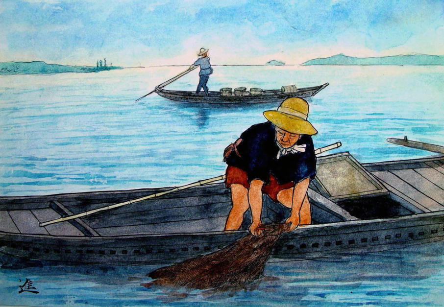
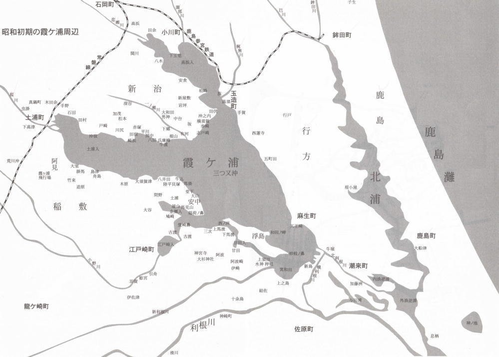
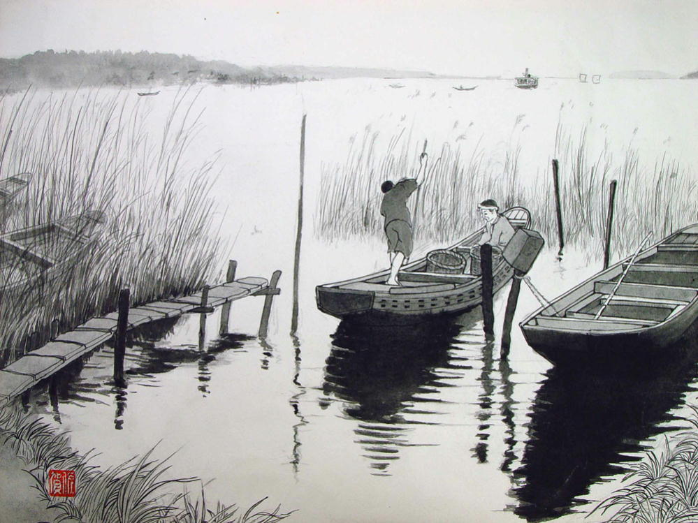
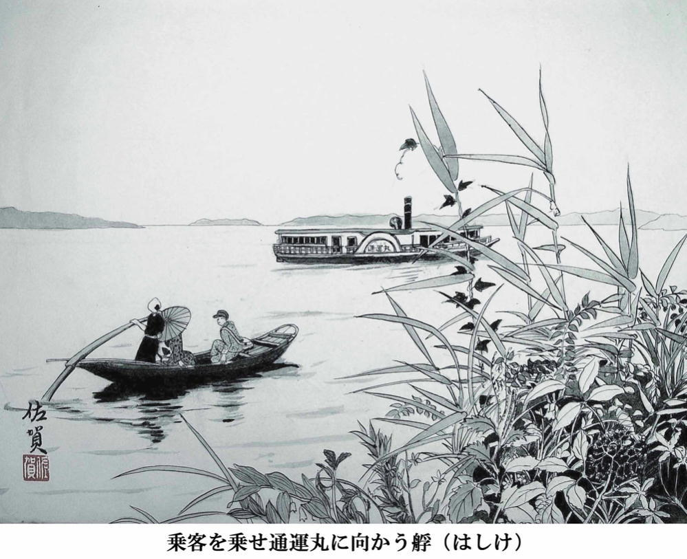
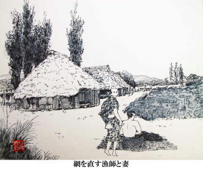
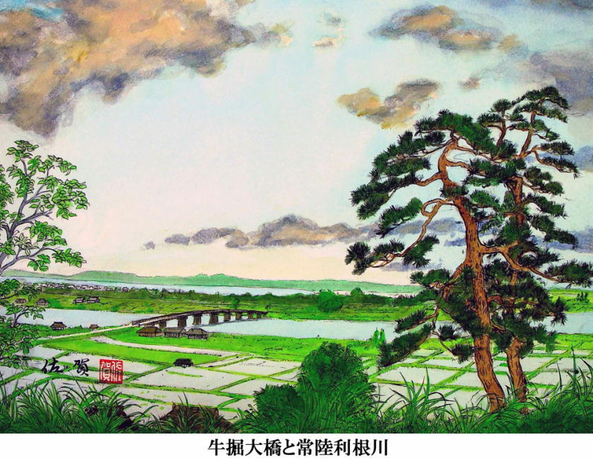
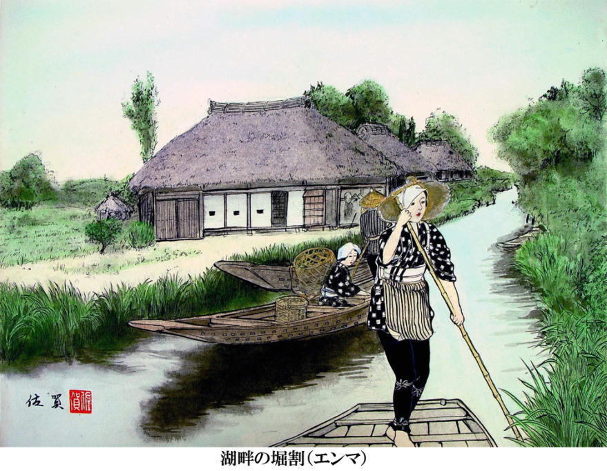
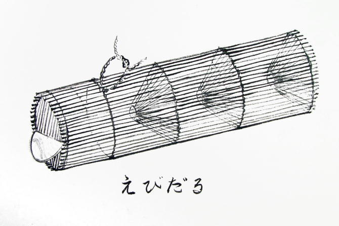
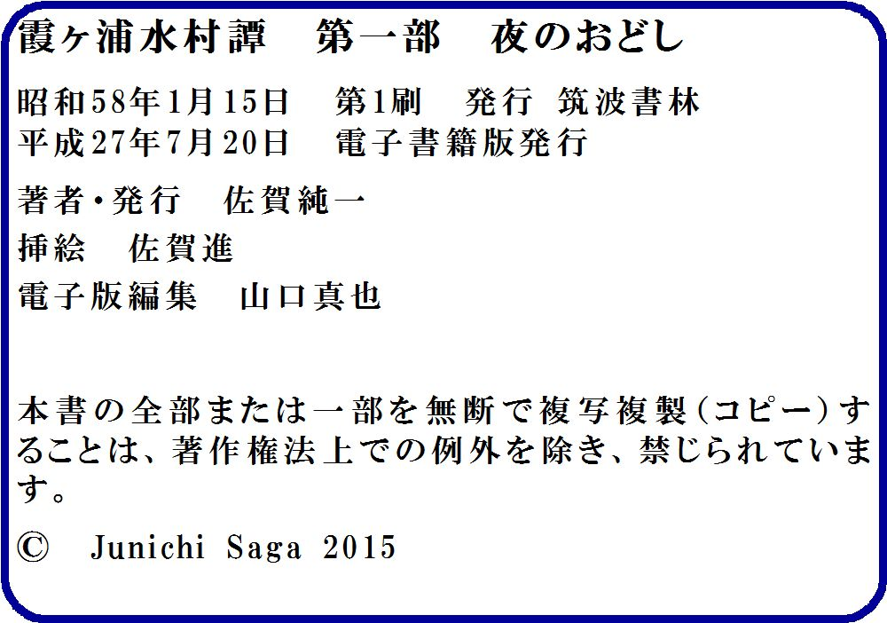

| 夜のおどし 霞ヶ浦水村譚 | |
| 佐賀純一 | |
| (2015) | |
霞ヶ浦水村譚
第一部 夜のおどし

江戸、明治、大正時代から昭和の初期に至るまで、霞ヶ浦沿岸の村々は水運と漁業によって大いに栄えていた。
漁を専業とする家々は五百戸を優に越え、半農半漁の者を加えると、その数は数千戸にも達した。
村々には船宿、薪炭肥料穀物問屋、川魚屋、雑貨店などがエンマ(掘割)と称する水路に沿って発達し、船大工、網大工、艀船の船頭、漁師などの藁屋根がその周りにぎっしりと軒を連ねていた。
だが昭和三、四十年を境にすべてが変った。自動車が人々の足を船から遠ざけ、湖の汚染は、魚の群を追い払った。エンマは道路となり、渚はコンクリートの堤防の下に埋没した。
湖と人と魚とが渾然と溶け合っていた時代は、跡形もなく消え去った。
今はただ、人々の想い出と、黄ばんだ写真の中にのみ、そのような世界が確かにあったのだということを垣間見るにすぎない。
この小説は 過ぎ去った 美しい日々の 挽歌である。

霞ヶ浦の南岸にはりつくように発達した木原村の浜には、四つの河岸がある。一番西の河岸が 「立宿の河岸」、そのつぎが「本河岸」、つぎが「中河岸」、そして最も東が「下宿の河岸」である。 中でも一番水路が広くて船の出入りが繁しいのが本河岸である。
両岸には薪・炭、砂利の問屋、船大工、艀船の船頭の小屋、雑貨店、蒸気宿などが軒を並べ、柵をぶち込んだ水べりには、客待ちの人力車夫たちがいつも五、六人はたむろして、煙草をのみながら世間話に興じている。宿の女中は忙しそうに台所や土間を小走りに動き回っているし、脂粉の香りを漂わせた若い芸者たちは掘割りの柳並木の蔭で退屈そうに団扇を使いながら、夕暮の来るのを待ちわびている。
こんなふうだから、山の中に住んでいる百姓たちがたまに用事などで本河岸に立ち寄ると、ふっと、どこか遠い華やかな都会の匂いを連想するほどである。
本河岸の賑いに比べると、立宿、中、下宿のそれぞれの河岸は、河岸と呼ぶのにもふさわしからぬほどの寂しさである。水路の幅も三、四間ほどで、柵の土止めも無く、葦が一面に生い繁り、農船や漁船が四、五艘ほど繋いであるばかりだ。はるかな昔には立宿も下宿も、かなりの家が立ち並び、霞ヶ浦を挟んで対岸に見える崎浜や、二里ばかり西方の城下町土浦との水上交通も盛んで、大いに栄えたらしいのだが、度重なる洪水で、宿も問屋も次第に上の方へ移ってしまい、今では田と葦原と、わずかばかりの漁師の家が、水路の傍らに残されているにすぎない。
十衛門の家は立宿にある。藁屋根のちっぽけな家で、裏庭がそのまま湖の渚に続いている。東隣りは水神様の境内で、広い砂地の中に松が五本ばかり、それぞれに独自の枝ぶりを誇示しながら立っている。夏には村の子どもたちが着物を水辺に近い松の枝に掛け、素裸になって湖で遊んだり貝を取ったり、鬼ごっこをしたりして終日喚声が絶えないが、稲刈りが終って水の色が冷たい濃紺色に変ると、人声はぱったりとだえて、西風が葦の茎をひきちぎりたくてたまらないように、ヒューヒューと唸るばかりだ。十衛門はこの寂しい立宿の一軒家に、女房のはると息子のしんと、たった三人で暮している。
村の子どもらはしんのことを「馬鹿しん」とか「しん馬鹿」と呼んでいる。十二にもなるのに学校へも通わず、仕事もせずに一日中、村の中をうろつき回って、ときどき寝呆けたようなぼっとした眼をして、口を半ば開け、小首を傾けていつまでも同じ場所に突っ立っている。雨の日など、人力車夫は泥田のようになったぬかるみを、客を乘せて一里も二里も曳いて行くのは苦労なので、
「おい、しん、五厘やっから、後押ししろや」
と、必ずしんに声をかける。するとしんは着物の裾を荒縄の帯に挟んで、全身ぐしょ濡れになりながら一心に、どこまでも押して行くのだ。車夫の末松などは、しんに後押しをさせるととても楽なものだから、二里も離れた江戸崎の町まで押してゆかせたりする。
「末松、おめえ、いくら相手が馬鹿でも、二里の道押させて、五厘ちゃあんめ、五厘じゃ、鉄砲玉だって二つ三つしきゃ買えねえど」
蒸気宿の番頭の勘十はこう言って末松をたしなめたりするが、勘十だって心の底では「バカにゃ銭金のことは分りゃしねえんだから、あれでいいのかもしんねえ」と考えているのだ。
しんはしかし、何もできない無能者かというと決してそうではない。櫓を漕がせたら、艀船の船頭の甚三も顔負けするほど達者に漕ぐ。無論、まだ十二歳の子どもだから、一人前の船頭のように長い時間漕ぐことはできないが、二町三町の短い距離ならば、甚三だけでなく、漁師でさえもよほど力をこめて漕がないと負けるかと思うほど、それほど櫓さばきがうまい。
「しんの奴も、いますこしましな頭してたれば、十衛門のいい後継ぎになれたものを、惜しいことしたなあ」
村の者は、しんの漕ぎっぶりを眺めながら、ふと、そんなことを言い交したりする。十衛門は木原一の漁師である。木原どころか、湖沿いの村々、つまり廻戸、大室、島津、舟子などの東の村々から、西は大須賀津、八井田、馬掛、そして大山一帯の漁師を含めても、十衛門の右に出る漁師は一人もいないと言われるほどの男である。
もっとも、村の人間というものは、自分の村を少しでも大きく見せるために、漁師の腕に限らず、船大工、網大工にしても、高瀬船の船頭にしても、また、宿の女郎衆にしても、己の村が一番だと自慢するのが常だから、十衛門が霞ヶ浦一の漁師であるかどうか、ほんとのところはよく分らない。
ただ、およそ六年ばかり前、つまり大正末年の冬に、川向う(湖の対岸を指す)の兵庫峰から蒸気宿に女を買いに来ていた為吉という漁師が、十衛門に漕ぎ比べを挑んだことがあった。兵庫峰は霞ヶ浦沿岸の村の中でも屈指の漁師村で、漁だけで暮しを立てている者の数は三十に余るほどである。勝負を挑んだ為吉という男は三十前の、漁師としては油の乗り切ったすばらしい体格の男で、黒光りした額の下の二つの眼は野良猫のように細く鋭くきらきらと輝いて、半農半漁の木原の者なぞ端から相手にしていないといった様子がありありと浮んでいた。
為吉は夏から秋にかけては帆曳船を操ってヮヵサギを獲り、冬場は三、四人の男を雇って「バタ曳き」をやりながら湖のあちこちを渡り歩いて暮していた。バタ曳きというのは小型の地引網の一種で別名「川地曳網」とも呼ばれている。霞ヶ浦にはさまざまな地曳網による漁法があり、その最も大規模なものを「百段曳き」という。これを曳くのには漁師が二十七、八人、船は網船を含めて最低四艘、通常は五、六艘の漁船が要る。百段曳きに用いる網は一口に千尋と言われるからおよそ一・八キロ。
この網の両端の綱を、網船と子飼い船のそれぞれに二丁ずつ載せた神楽棧と呼ばれる轆轤で曳くのだが、この方法だと一網で千貫ものワカサギがとれることがある。鰻、鯉なども一網で五百貫、 六百貫もとれ、とれすぎて買い手がつかず、畑の肥料にしたなどということも決して珍しくない。百段曳きのような大規模な網を持つ網主は霞ヶ浦全体でも三、四軒しかない。
百段曳きの下の地曳網が「大徳網」である。これは網の片袖が百八十メートル、つまり両袖(全長)で四百メートルほどの網だが、網主によって千メートル以上の大きなものを使う者もいる。
大徳網の下が「小大徳」、小大徳を小さくしたものが「バタ曳き」である。網の長さは全長百メ丨トル前後。この網だと漁船も一艘ですむし、漁師も四人いれば十分操業できる。獲物は、鯉、鮒、ボラなどのほか、マルタ、サイ、それからワカサギ、タナゴ、そして時には銚子沖の海から利根川を遡って霞ヶ浦へ入って来たカレイ、あるいはタコなどがとれることがある。
為吉は帆曳漁を得意とする男だが、秋風の冷たくなる頃になると、ヮカサギも急にとれなくなるので、持ち船にバタ曳き網をのせて仲間をひき連れ、東は土浦の入江奥深くから、西は浪逆浦、時には北浦まで遠征して獲物を追い歩く。獲物が多い時には、漁場の近くの川魚屋に魚を売り、宿に泊って女を上げてドンチャン騒ぎをやらかし、漁が無い時には船に苫を切って、蓆の上で寝るのだ。
苫を切るというのは、漁船の上に棟木と呼ばれる杉の丸太を斜めに渡し、丸太の両側に蓙を被せ、その上を厚さ三、四寸も茅で覆って屋根を葺くことをいう。つまり漁船に即製の茅葺屋根を造るようなものだが、朝になれば漁の邪魔になるから、素早く取っ払って船の隅の方へ片付けてしまう。
こんなふうに、為吉は一年の殆んどを水の上で過している。まだ女房もいないので、どこへ行こうと気楽なものだ。兵庫峰には為吉のような漁師が七、八人もいる。兵庫峰と並びの、房中、根山、八田、有河の浜にも同様の暮しをしている者が十数人もいる。ところが兵庫峰と対岸の、安中村から木原村にかけては、百姓をやるかたわら漁を副業とする者は大勢いるが、生粋の漁師と呼ばれる男は数えるほどしかいない。それというのは、安中や木原の土地は、兵庫峰のある出島の浜と呼ばれる一帯と比べて地味が肥え、土地も広いので、暮しを立てるために漁を専業とする必要は殆んどないのだ。
こんなわけで、兵庫峰の漁師と、安中、木原の住人たちは昔っから肌が合わない。兵庫峰の漁師は「向う場」つまり自分の村の対岸に当る安中、木原の人間を「どん百姓」と呼んで軽蔑しているし、安中や木原の者たちは、「向う場」つまり対岸の出島の漁師を「ならず者」ぐらいにしか見ていない。
為吉が女を買いに木原へ来たのはこれがはじめてである。というのも、兵庫峰の並びの八田の部落には「よねや」という大きな茶屋があり、女も十人から置いているので、たいがいはここで遊ぶ。 よねやのすぐ下、湖の葦が林のように高く生い繁っているエンマの横にも「さんこや」という茶屋がある。さんこやには女が四人ばかりいる。
そのほか、渚沿いに一里ばかり有河の部落に寄った街道沿いには、道を挟んで「しんはし」と「ふるはし」という茶屋があるし、東へ一里寄った四宿の部落にも「山瓢亭」があり、更に四半里も浜沿いに行くと、崎浜の部落に「日の出屋」が、気のきいた女を五人ばかり置いている。だから、出島の漁師たちは、わざわざ対岸の蒸気宿まで芸者を買いに行く必要などさらさらない。もし木原まで出かけるなら、ちょっと足を伸ばして土浦まで行けば、女郎屋でも茶屋でもいくらでもあるのだから、なにも木原の浜へ船を着けることなどないのだ。
ところが、今朝がた、為吉は三人の手下を連れて、木原の東半里の舟子の沖で網を曳いて、百貫余りの鯉をとった。
為吉はこの鯉を木原の川魚屋、橋本金兵衛に十一円で売った。そこで為吉はその足で蒸気宿へ上りこみ、まだ日も高いうちから、酒をあびるほど飲んで、大盤振舞いをやらかしたのである。ちなみに、蒸気宿というのは、霞ヶ浦を行き来する蒸気外輪船「通運丸」の利用客が船待ちする間、席を貸して茶を出したり、あるいは泊めたりする宿のことである。木原の蒸気宿は皆川やと言い、牛堀の千歳楼、土浦の日高屋と並ぶ、霞ヶ浦では最も名高い蒸気宿である。
皆川やには女が五人いる。おかつ、おりん、なつよ、みちよ、ちよこの五人である。為吉はこの女たちを全部自分の座敷へ呼んだ。そして、兵庫峰の漁師の腕を大いに自慢した。手下の男たちも四方の座敷の客によく聞えるような大声で、さんざん大法螺を吹いた。
「おらたちがほんものの漁師だらばな、ここらあたりのどん百姓のやってる漁なんつァあ、子どもだましの遊び事だあな」
と、新吉が言った。
「赤んぼが、よちよち歩きしながら川ん中、おっかなびっくり、手さぐりで歩いてるようなもんだっぺな。危なかしくて見ちゃいらんねェ」
と英次が言った。
彼らは、言いたい放題の自慢話やら、他の村の漁師の悪口を、黄色い歯の間から鉄砲だまのように放ち続けた。
漁師の話に種が尽きると、女のけちをつけはじめた。
「おめえらどっから連れてこられた女か知んねえがな、おらたちが通いつけのよねやにゃ、いい女がいっと。藤子、春代、道子、貴子なんつういい名めえでなあ。肌なんと餅みてえにすベすべして、 鼻なんとも高くてな、目はぱっちりと色白だし、まあ、どっかの蒸気宿の飯盛女とは月とすっぽんつうとこだわなあ」
「いや、ほんとだ、おめえのいうとおりだ。よねやの女ん中じゃ貴子が一番だっぺ」
「貴子もいい女だが、山瓢亭の小富士も、ふるいつきたくなるようないい女だかんなあ。ありゃあ志戸崎のケーワン(女衒のこと)が東京の深川の小網町つうとこでめっけて、口から先の出まかせ言って、蒸気船さのっけて連れて来たんだつう噂だが、いやさすがに深川の女だけあって、よだれがでそうないい女でよ、湯上りに化粧して出窓なんとから首出して湖の方見てたりすっと、もう、うっとりしちまって、漁さ出んのもやんなっちまあようなありさまでなあ、ここらの女と比べっと 天女と下女のちがいがあらあなあ」
なつよは男たちの話を唇を噛みながら、両眼をきっとみひらいて聞いていた。なつよは五人の女たちの中で一番器量が良く、年も二十二になって、漁師や百姓たちの扱いは慣れているつもりだった。しかし今日の客は端から我慢がならなかった。このあたりでは一番の売れっ子であると自負していた彼女は、自分が他の茶屋の女と比べられながら口汚なく貶されているのだと思うと、目の前の下卑た男たちが無性に憎らしくなり、目がひとりでに釣り上ってくるのが、はっきりと分った。
無精髭を顔一面に生やした団栗眼の由蔵が、いちばん若いおりんの腰をつかんで、帯を解きにかかっていた。
「三味線もろくすぽ弾けねえんじゃ、裸でカッポレでも踊ってもらあなけりゃなんめえよ」
由蔵はいやがるおりんを膝の上に押えこんで、へらへらと薄っぺらな哄笑を座敷いっぱいにみちあふれさせながら、太い腕で懸命に帯を解いていた。おりんは半泣きべそをかいて、由蔵の腕の中でばたばたと暴れた。亀甲の笄が髮から畳へポロリと落ちた。おりんは由蔵の顔をひっかいて、四ッん這いになって笄に飛びついた。由蔵は褞袍を蝙蝠のように広げて、おりんの後ろから覆いかぶさろうとした。
「キャァ！」
とおりんが叫んだ。
「なにすんだよ！このど助平野郎」
なつよは、とうとう我慢ができなくなり、由蔵の体を横ざまにどんと突き倒した。彼女は怒りで顔を真っ青にして、肩でハァハァと大きく息をしながら、男たちに向って大声で叫んだ。
「なんだい、田んぼの泥鰌みたいな真黒い顔してるくせに、大法螺吹きまくってさ、そんなに向う場の女がいいんなら、さっさと帰って会いに行ったらいいじゃないか、こふじだかたかこだか知んないけどね、その女郎らんとこに行って札びら切って裸にさせて、カッポレでもなんでも踊らせりゃいいんだ。この宿は、霞ヶ浦でも三本の指に数えられるほど名の通った蒸気宿なんだからね、あんたらみたいな、下劣な乞食漁師らの来っとこじゃないんだよ！」
「ほう、こりゃあ、威勢のいい女がいるもんじゃねえか」
為吉は杯を畳の上にぽんとほうり投げると、黒光りする額の下の眼をきらりと光らせて、なつよの紅潮した顔をしげしげと見つめた。
「貴子もいい女だが、おめえもよく見るとなかなかの女だぜ、その口の悪いとこも気に入った。どこから来たんだ。土浦か？」
「どっからだっていいだろう！さっきから聞いてりゃ自分たちが霞ヶ浦一の漁師みたいな口をきいてっけど、笑わせるよ、うちにゃあね、麻生の土岐田の大旦那も、新田の額賀の若旦那も、沖宿の山口の旦那も、みんな来るんだ。みんな百段曳きの大網主だよ、おまえらのようなバタピキとは 月とすっぽんさ。それに、漁師だって、あんたらより腕の強い男らが、木原にはいくらでもいる。あんたらよりよっぽど男らしい漁師が、この村にはちゃんといるんだよ！」
「ふん！なかなか言うじゃねえか」
為吉は麻生の土岐田などという大網主と自分を比べられて、おまけに乞食漁師とまで罵られて腸が煮えくり返りそうになりながら、それでも、女相手に喧嘩したとあっちゃ名が廃れると、自分に言いきかせて、怒りをのどの奥で押し殺しながら、低い声で言った。
「誰だね、その腕の強え漁師てのは？この木原にそうた男がいるつうんなら、名めえぐれえ教えてもらおうじゃねえか」
「十衛門さんだよ」
なつよは為吉の眼をまっすぐに見た。
「十衛門さんだよ、立宿のね、聞いたことぐらいあるだろう」
「じゅうえもん......おめら、そうた男のこと、聞いたことあっか？」
為吉は由蔵、英次、新吉の顔をぐるりと見回した。
「あっかつうんだよ！」
「ねえな」
と、新吉はよだれを垂らしながら、ろれつの回らぬ口で言った。するとその横から、
「いや、あっと、木原の十衛門だっぺ」
と、英次が赤い寝呆けた眼を無理に瞠いて、嗄れた声で言った。
「おらずっと前に親父から聞いた話だが、なんでも向う場の木原に提灯網を使う鯉とりの名人がいんだつう話を聞いだっけが、その漁師の名めえが、十衛門だと思ったな」
「ちょうぢんあみだと？」
為吉はさすがにどきりとした。
提灯網を使って鯉をとるには大した技量が要る。長年水の上で暮した漁師でも、よほどの才能の持ち主でなければ、いくら年期を入れたところで、この漁をものにすることはできない。為吉は、 八田部落の漁師で作三と呼ばれた漁師が提灯網の名人であったことを、かすかに覚えている。作三は為吉の祖父と同年で、為吉のことをおおいにかわいがってくれて、船も幾度ものせてくれた。
「ほれ、見ろ、あそこさ、鯉が泳いでぐべ」
作三は舳に立って、二間余りもある長い竹の棒を右手に持ち、五、六間先の水面を指差しながら為吉に言った。
「めえねえど、どごだ」「めえねえか、しゃあねえな」
作三は為吉の顔を見下して目を細めて笑った。作三は、 マコモの茎が二、三寸水面に頭を見せているあたりを 左手で棹を、ソロリソロリと押していった。
船は波も立てず、ススッと滑るように水面を進んだ。 船は、とても速く走った。作三は無言で、五間ばかり先の水面を指差した。為吉にはやはり何も見えなかった。と、不意に作三の目がきらっと光った。
彼は舳の先端に左足をかけると、右手に持っていた竹の棒を高々と頭上にふり上げた。そして体全体を弓のようにぴんと張ったかと見る間に、その棒を七、八間先の波間へさっと投げた。
竹の先は水に当って、ポーンと高い音をたてた。棒は最後の三つ四つの節を残して、全部節を抜いてあるので、水面に当ると、竹の中の空気が押し縮められて、とてもいい音をたてるのである。
作三は竹を投げた所へすばやく船を漕ぎ寄せ、浮かんでいる棒を拾い上げた。それから提灯網を水面下ヘススッと下した。この網は差渡し四尺ほどの丸い網である。ちょうど提灯のような格好をしているところからこう呼ばれている。作三は網を下し終えると、為吉を見て、にやりと笑った。
「この網ん中に、大鯉がへえってるど。三尺はある」
「ほんとけえ？」
「ほんとだとも、わしがなんでおめえに嘘いうだ。今すぐ、嘘ではねえってことを見せてやる」
「うん、見せてくれよ」
為吉は半信半疑で、作三の皺だらけの手元を見つめた。作三は網の上端を締めた紐をゆるめて、その中へ小網を差し入れた。透明な青い水の中で、小網が黒い大きなものをすばやく捕えた。作三は網をぐいとひき上げた。すると、その中には三尺に余る大鯉が捕われた竜さながら、黒銀の鱗を躍らせて跳ね回っていた。
「うわー！鯉だ、大鯉だ！すげえなあ、こうたえかいの見たの、はじめてだなあ」
為吉は息を弾ませて、その大鯉をつくづくと見た。作三は為吉の驚嘆した表情に、大いに満足した様子だった。彼はその大鯉を船の中の「生け間」へほうり込むと、
「おめえもえかくなったらやってみろ、教えてやっから」
と言って微笑した。
「よおく水を見てっとな、鯉が泳いでぐのがめえる。そんで、その鯉の泳いでぐ鼻先さ、竹の棒を投げてやんだ。そうすっと、鯉はその音に驚いて、止まっちまう。どういうわけか、水ん中に止まっちまあだな。そこさ網を入れてやれば、鯉なんぞわけなく捕れるだよ」
作三はこう言って為吉の頭を生臭い手でぐりぐりとなでた。
しかし、為吉は成人してからも、作三のまねは決してできなかった。為吉ばかりではない、兵庫峰の大勢の漁師たちの中で、作三の後を継げる者は、誰一人としていなかった。水の底を泳いで行く鯉の方向を見極めたり、その鼻先へぴったりと棒を投げつけたり、鯉を立ち止らせたりといった恐るべき技を身につけている者は、作三よりほかに、ただの一人もいなかったのである。
「ああした漁師はもう出やしめえ」
誰もがそう思った。作三は七十八の年まで、八田のエンマの横にちっぽけな小屋を作って、ばあさんと二人で暮らしていた。彼は死ぬ三日前まで毎日漁に出て、幾匹もの鯉を捕った。
作三が死んだ時、為吉は二十三歳の一人前の漁師になっていた。為吉は、あの漁は作三で終ったのだと、そう思っていた。そして提灯網という言葉さえ久しく思い出すことがなかったのである。
ところが、英次が、今、突然、この木原の浜に、提灯網を使える男がいると言った。為吉はギョッとして、酔いがいっぺんに体から吹っ飛んでしまった。
「英次、おめえ、口から出まかせ言いやがっと、ぶっとばされっと！」
為吉は英次をぎらぎらと睨みつけた。
「こうた貧乏漁師の浜に、あの網を使えるもんがいるわけがあんめえ！」
「いや、でまかせではねえよ、おら確かに、ずっと前に、そうた話を親父から聞いたことがあんだ」
英次も女たちの前で赤恥をかかされるのはさすがにいやだったので、柄にもなく、狭い額をぐっと上げ、為吉を瞼をぱちぱちさせながら見返した。
為吉は英次の不遜な顔付きをつくづくと見た。
「この野郎！親から勘当されて食うや食わずでおれの家さ転がり込んで来やがって、三度の飯を食わせてもらってその上に、今日はたらふく酒を飲ませてやって、女もあてがってやってるつうのに、そうた目付きをしやがって、そんですむと思ってやがんのか！」
為吉は、英次の酒で脹らんだ横つらを張り倒してやりたい気持に駆られた。為吉は無意識のうちに、拳をきつく握りしめた。と、その時、宿の中が急に騒がしくなった。
船待ちをしていた客たちが、いっせいに宿の外へ出て行った。おりんがどこからか遠眼鏡を持って来て、障子を三寸ばかり開けて、その隙間から湖の方をのぞいていた。蒸気宿の庭には白い旗が上って、パタパタと西風にはためいている。
「通運丸が来たよ」
と、おりんが眼鏡を覗きながら言った。
「どれ、みせろ」
由蔵がおりんから遠眼鏡をひったくって、右眼をつぶり、首を斜に傾げて照準をぐるぐると回した。
「馬鹿だね、あんたは」
おりんはけらけらと笑った。
「なんだと、このあま！」
由蔵は叫んだが、目は眼鏡から放さなかった。
艀船の船頭甚三が、客を七、八人も乗せてエンマを漕いで行った。
子どもたちが十人余りも、エンマに沿って、何か大声で叫びながら甚三の船を追っかけて行った。
「糞面白くねえ」
為吉は手酌で杯に酒をなみなみと注ぐと、ぐいと一息に呑み干した。
「蒸気宿に蒸気がへえんのがそうたに珍しいのか」
と彼は由蔵に言った。
「そうたに珍しいんだら、おめこれから行って乗せてもらって来う。......それから英次、おめえ、さっき言った言葉、もしも嘘だったりしたれば、ただじゃおかねえど、おらあな、口ばかり達者で実のねえ人間なんぞ大嫌えなんだ。さっきおめえが言った、十衛門とかいう男、今から搜してここさ連れて来い。そして、おれの目の前で、提灯網で鯉捕りやらせてみろ、もし、それができなかったれば、おめえたあ今日限り縁切りだ。どこさでも行げ......、それがやだったら、えかい口、おれの前で叩ぐんじゃねえ」

座がにわかに白けてしまった。由蔵も新吉もそして英次も、手酌でがぶがぶと酒を飲んでいた。女はみんな逃げ出してしまい、なつよだけが障子を背にして、胸を張り、目を釣り上げてがんばっ ていた。
「十円も払って、このざまか！」
為吉は腹の中で舌打ちした。一刻もこんな所にいたくなかった。
木原なんぞに、二度と来るものかと、彼は己の胸に言いきかせた。彼は英次や由蔵たちを置き去りにして、自分だけ引き上げるつもりだった。酒ばかり食らって大した漁もできない奴なんぞ、今日限りお払い箱だと心に決めていた。彼は思わず、「帰るぞ」と言いかけて、その言葉をのどの奥にのみ込んだ。そして、すっと腰を浮してなつよを見た。
するとその時、目の前の襖間が音もなく開いて、後ろから色白の中年の男がついと首を伸した。男は腰を屈めたまま、ススッと座敷へ入って来た。それからぺコリと頭を下げると、
「この英次さんというお方の言ってることは、決して嘘ではありませんですよ」
と細い声で言って、へへっと意味もなく笑ってみせた。
男は、蒸気宿の番頭の勘十だった。小猾そうな目をした小さな男だ。
勘十は二階の騒ぎを聞きつけて、そろっと階段を上り、中の気配をうかがっていたのである。為吉は勘十の顔を一目見るなり
......こいつは口先ばかりの根無し草で、金をもらえば何でもやる下劣な奴だな......
と見てとった。
「おめえは、十衛門とかいう奴のこと、よく知ってんのか」
と為吉は勘十を正面から見据えて言った。
「それはもう、同じ村ですから」
勘十はぺコリと頭を下げて女のように甲高い声で答えた。彼は「向う場」のバタ曳き漁師風情に、大きな顔をされるのを、大いに不快に思っていた。それでこの際、十衛門をほめちぎってやろうと心に決めていた。
「十衛門は、まずこのあたりでは右に出る者の無い名人ですよ」
と、勘十は手をもみながら言った。
「ふん、どこの村にも名人はいっぺ、だが、そいづは提灯網を使うのか」
「ええ、勿論、使いますとも」
勘十はぬけぬけと嘘をついた。彼は十衛門が提灯網を使うかどうかなぞ、全然知らなかった。ただ以前、勘十がまだ小僧だった頃、先代の十衛門が、竹の棒一本で鯉を捕っていたという話は聞いたことがあった。ちょうぢん網という言葉も、聞いたようなことがあるような気がした。しかし、今の十衛門がそんな漁をやるのかどうか、勘十は全然知りもしないし、興味もなかった。どだい、勘十は漁師の暮しには全く無知だったのである。
「鯉とりの提灯網だぞ」
と、為吉は念を押した。
「そうですとも、一日に三十匹も大鯉を捕ったことがあるそうです」
「おめえ、その目で見たのか」
「いえ、捕るとこは見たことはありません。私は船は嫌いで乗りませんから。でも鯉を捕って来るのはいつものことですよ」
勘十はちょっとどぎまぎした。
為吉は、「こいつ、嘘をぬかしやがってるな」と、相手の目を見ながら直感した。知ったかぶりをしている顔の真中の小さな鼻や、きょろきょろと動く細い眼を見ていると、こいつもぶっとばしてやりたいという狂暴な衝動がこみ上げて来るのを、為吉は胸の中に強く感じた。「早くこうした汚ねえところから、西風の吹く湖さ出てえ」と、彼は思った。
するとその時、傍から、なつよが
「ほんとだよ、十衛門さんは鯉だって鰻だって、船いっぱい捕って来るよ」
と、闇の中の猫のように、きらきらと眼を輝かせて、よく通る声で言った。
「あの人は、名人だからね、なんだってできないことはないんだよ、嘘だと思ったら、その目であの人の漁を見てごらん」
「そうかよ、そうかよ、十衛門てえ奴は、そうたに大した奴なのかよ」
為吉はなつよの顔を凝視した。ぽっと上気した頬に紅がさして、敵意を含んだ大きい目が、ふるいつきたくなるほどの色気を発散していた。為吉はこんな美しい女を味方にしている十衛門という男が、腹の底から憎くなった。まるで、十年も二十年も前から、その男を憎み続けて来たようにすら感じられた。
......おれは、その男を、こいつらの目の前で叩きつけて、村いっぱい、赤恥を曝してやらにゃならねえ......
為吉は強く決心した。
「おめえ、今、その男は、何でもできるつったな」
と、為吉はなつよの眼をみつめながら言った。
「ああ、言いましたよ」
なつよは相手から眼を外さずに言い返した。
「そんじゃ、櫓さばきも、さぞかしうめえもんだろうな」
「櫓が漕げなくて、どうして、漁師がつとまるのさ」
「そらそうだ。そんじゃおめえ、その十衛門とおれと、櫓でこの湖漕ぎ比べしてどっちが勝つと思う？十衛門か、それともおれか」
「それは十衛門さんが勝つだろうさ、あんたなんぞ手も足も出ないだろうよ」
なつよはなんのためらいもなくそう言った。為吉はにやりと笑った。
「こいつあ大した惚れ込みようだ。そんじゃ番頭さん、おめさんはどう思う」
と為吉は今度は勘十に向って尋ねた。
「おれと十衛門と、どっちにおめえさんは賭けるね」
「さあ......お客さんも見るところ大した漁師でいらっしゃるわけですから、十衛門がお客さんに勝てるとは思いませんが、まあ、いい勝負をすることは間違いないでしょう」
「おう、そうかい」
為吉は番頭の眼の底に......たかがバタ曳き漁師でも、鼻柱だけではやけに高いらしいな......という蔑りの色が浮かんでいるのを見て、体がカッと燃え上るのを覚えた。......まあ見てやがれ、おれは十衛門を叩きのめして、おめえら木原のどん百姓に、兵庫峰の漁師の力を見せてやる......
為吉はまだ杯を重ねている由蔵や新吉を横目でぐっと睨んだ。
「面白えものを見せてやれそうだな」
と為吉は微笑を浮べてなつよを眺め、それから勘十に視線をゆっくりと移しながら言った。
「やってみようじゃねえか」
「やるって、何をやるんです？」
勘十は為吉が大いに不快に思っているさまを小気味よく思いながら、慇懃に尋ねた。
「漕ぎ比べをやろうてんだよ、おれと、その十衛門とかいう男と、どっちが腕が強えか、船で勝負しようてんだ」
為吉は懐から一円札をつかみ出すと、畳の上にぽんと投げ出した。
「今すぐ、十衛門とかいう男んとこさ行って来い、そして、おれとこの浜から向う場の崎浜まで漕ぎ比べをすることを承知させるんだ。もしおめえが承知させたら、この一円札をくれてやる。
もしそいつが、だめだ、やりたくねえつったら、木原の漁師は腰抜けだつうこった。あしたっから出島一帯は言うに及ばず、高浜、麻生あたりまでも触れ回って、木原の顔を潰してやるぞ、いいな。 そいつがいやだったら、なんとしても相手に承知させて来い」
「承知させたら、一円もらえるんですか」
勘十は一円札の方へ細い首を伸しながら相好を崩して、甲高い声で言った。
「それはもう、承知させますとも、いや、十衛門も喜んで承知するのに決まってますよ、なにしろ木原の面子がかかっているんですから、それじゃ、これをあずかって」
勘十は言いながら、バッタのように一円札の方へ手を伸した。が、勘十が手をひっこめるより一瞬早く、為吉の足が札を握った勘十の手をビシリと音を立てて踏んづけた。
「今やるわけにゃいかねえ、相手がうんと言ってからだ。もうかれこれ二時は過ぎたろう、冬の日は早え、急いで行って来い」
為吉はぎらぎらした眼差しで勘十をにらみつけた。勘十は為吉の木の根のような足の下から、手のひらを抜き取りながら......果してこの男が約束を守るだろうか......と、疑心暗鬼でのろのろと立ち上った。
なつよはそんな勘十の、妙に黄色っぽい、ねっとりとした横顔を、何かとても汚ない不快なものを眺めるような眼付でちらりと見た。「とんでもないことをしてしまった」という後悔が彼女の胸の奥で疼いていた。
なつよが十衛門をあれほど自慢しなければ、為吉もこんな馬鹿なことを思いつくなどということは決してなかったにちがいない。
「どうだ、あの野郎、承知させっと思うか」
由蔵は座布団を枕に長々と寝っ転がったまま、右手を伸ばして沢庵をつまみ上げ、その手を伸ばしたまま天井の方へ向き直ると、大口を開いて、その中へぽんと沢庵をおとした。
「あいづなら、やっべな」
と、英次が懐から煙管を探り出して言った。
「どうた奴なんだっぺ、その、じゅえもん、とかいう奴はよ」
新吉は相変らず手酌で酒を飲み続けながらとろんとした眼でなつよを見た。
なつよは三寸ほど開いた障子の隙間から外を見ていた。宿の客を蒸気船まで送り届けた甚三が、船を降りた三人ばかりの乗客を艀に乘せて、エンマをゆっくり漕いで来た。人力車夫の末松と勇吉は、早く客を取ろうとして、柵の上から船の方に声をかけていた。
水神様の鳥居が、冬の日に妙に白っぽく光っていた。葦原が西風にざわざわと揺れて、その向うに寒々と波打つ湖が、どこまでも広がっていた。
蒸気宿の勘十が百姓の信吉を連れて為吉の話を持って来た時、十衛門は女房のはるといっしょに、土間に敷いた筵の上でエビダルを造っていた。
開け放った板戸の向うに、十二月の真青な湖が見え、西風が葦の枯穂の頭を波のようにうねらせて、破れ障子や板戸を、カタカタと揺ぶっていた。
庭を歩いていた逞しい雄鶏が、暗い土間の中をのぞき込んでコココと低く鳴いた。
「俺はな、そうたことにかまけて、遊んでいる暇あねえ」
十衛門は勘十の話を聞き終えるなり、そっけなく言った。この時彼は三十三歳だった。ぼろぼろの仕事着に荒繩の帯を締め、右手に持った青光りする小刀で、無造作に竹を割っていた。それほど体は大きくないが、褐色に日焼けした身体全体が、一分の無駄もない筋肉に包まれ、その見事な均整のために、ぼろぼろの木綿の着物が、この男の姿を少しも貧相に見せなかった。いやむしろ十衛門は、自分の仕事にしっかりとした自信を持っている者に特有の、おおらかさに尊大さの入り混った、一種独得の表情をして、しかも落ちつき払ったゆったりとした態度をあわせ持っていたので、きちんとした身なりの勘十の方が、いかにも貧乏人臭く見えた。
「やりたかねえのかね」
と、勘十が土間の入口で鳴いている雄鶏をうるさそうに見やりながら言った。
「誰か、他のもんとやれって言ってくれ」
と、十衛門が言った。
「そうはいがねえ」
と、百姓の信吉がひどく興奮して叫ぶように言った。
「兵庫峰の奴らだけではねえ、向う場の奴ら、八田でも有河でも志戸崎でも、こっちがしの漁師のこと半ぱもん扱いしてやがんだ。船大工も向う場の大工でなけりゃ本物の船は造れねえなんてぬかしやがってるしな。もしここで兵庫峰の漁師に負けてみろ、末代まであいづらに頭が上んねえど」
信吉は勘十が一円という大金のために十衛門の説得を請負った経緯を全く知らなかった。信吉は
「もし十衛門が勝負をやんねえつったれば、木原の人間が物笑いの種にされちまあんだぞ」という勘十の言葉を信じて、十衛門の家へ駆けつけて来たのである。
「なあ考えてくれ、おめえがやんなけりゃ、誰かがやんなけりゃなんねえ。そうしたれば、負けるに決まってる、相手は本物の漁師だ。太刀打ちできんのはおめえしきゃいねえ、承知してくれよ」
と、信吉は熱心に言った。十衛門は鼻のひしゃげた信吉の顔を腹立たしげに眺めた。
「下らねえ事を言うんじゃねえ」
十衛門は厳しい声で言った。
「この寒いのに、船漕ぎ競争だと？そんで末代の恥だと？なんのつもりだ、馬鹿々々しい。女買いに来て、酒かっ食らってる奴らの相手をしろってのか。それほど俺が暇だと思ってんのか、いいかげんにしろ」
十衛門は言い終えると、竹を割り続けた。十衛門の膝の横に見る見るうちに割り竹の山が積み上げられていった。西風がどっと吹き込んで、筵の上に重ねられた棕櫚繩の束を、老婆の髮のようにばさばさと揺ぶった。
信吉が板戸を閉めに行った。
「なあ、十衛門よ」
勘十は煙管に莨をつめ、囲炉裏の火を移して、フウッと一服吐き出しながらかたわらの薪束に腰を下した。客と対する時の卑屈な笑いは陰をひそめて、まるで大旦那を気取っているかのような大した態度であった。
「私がここへ来たのはどうしてもあんたに漕いでもらいたいからだ。他のもんじゃとても勝てねえ。それぐらいのことは長年客を見て来た私には一目で分る。なに、私のとこは宿だから、どこの人間でも泊ってくれりゃそれでいい。金も沢山使ってくれる客が上客というわけだ。だが今日の客ばかりは、金を使ってくれたからといって、へいそうでございますごもっともでございますと、引き下がるわけにはいかない。というのも、為吉はもしあんたが競争に応じないというんなら、木原のもんは腰抜け野郎らばかりだと、霞ヶ浦いっぱい触れ回ると言ってんだからね。もしそういうことになったら、これから先、木原の者は向う場の漁師ばかりじゃない、土浦や佐原、潮来なんぞから来る客からも、見下した眼で見られることになる。こうなったら、村のもんはたまらないじゃないか。こんなわけだから、勝手な願いかもしらないが、浜の面目があんたの腕にかかっていると思って、漕いでみてくれねえか」
「なるほど、面目ね」
十衛門は底光りする額を真っ直ぐ勘十の方へ向けて、ムッとしたように言った。
「浜の面目、そいつあ結構だ。だが、俺の面目はどうなんだ。......勝ちゃあいい。だが、負けりゃ浜の面目も潰れるが、俺はこの浜にゃいられねえ」
「そんなことは、ないだろうよ......」
「ねえとは言えねえはずだ。浜の面目を潰した男が、のうのうとこの立宿に住んでいられるかい！」
「......」
「それに、これから船を出すのは気狂い沙汰だ。こんな日に船え漕ぐのは死にに行ぐようなもんだ。」
「そんなこたあんめ、大した風ではねえど」
信吉は風の音に耳をそばだてながら言った。
「これぐれえの風は、今時分じゃおとなしい方だべ。昼前からすりゃ、ずいぶんとおさまってら。船え漕げねえなんつうような様子では決してねえぞ」
「それが素人の言うことだ」
と、十衛門は信吉の顔を見て冷たく笑った。
「筑波の山あ見ろ。それから、日光の山と、ずっと左手の、富士山があるあたりの空の具合を見ろ」
「空が、どうかしたのか、良く晴れてるぜ」
「このあたりの空じゃねえ、西の空だ。灰色の雲が、筑波の山をぐるっと蛇みてえに取巻いて、西から東へ川みてえにずうっと流れてるだろう。外さ出て、見てみろ」
信吉と勘十は板戸を開け、真っ青な湖の見える裏庭へ出た。
「どうだ」
と、十衛門は土間の中から声をかけた。
「おめえのいう通りだ」
信吉は戻って来て、上り框から囲炉裏の方へ冷えた手を伸ばして言った。
「蛇みてえな雲は、富士山の方まで伸びてたよ。そんだが、ずっと遠くだど。このあたりにゃ、まるで関係ねえべな」
「今はな。だが、あと二、三時間もすりゃ、おどしが来る」
「おどし？......そうたこたあんめえ」
信吉は黄色い歯を見せて無邪気に笑った。
「おらあ、噂に、そうた風が吹くことがあるってことは聞いた覚えはあんが、三十年このかたおどしに会って人死が出たあなんてこと聞いたことがねえぞ」
「当り前だ、こうした日にゃ漁師は決して船え出さねえかんな。その為吉とかいう男も、おどしが来るぐれえのことは分ってるはずだ。これから日が沈むまで、浜さ立って出島の方をよおく見物してみろ、漁船は早々に引きあげて、いまに一艘も湖の上にゃ見えなくなるぞ」
「そんじゃ、なんで為吉は競争すっぺなんて言い出したのかな」
「こうた日に、船え出すわけがねえと見越してこっちの出方を見たんだっぺ。もしもそうではなくて、酔っ払って雲行きに気づかなかったつうんだれば、漁師の風上にも置けねえ大馬鹿野郎だよ。その為吉って男はな」
十衛門は祖父の十衛門からも父の十衛門からも、湖の風については骨身にしみるほど、いろいろな知恵を叩き込まれた。祖父は幼い孫に向って、まるで一人前の男に対するように真剣に言い聞かせた。
「いいか、冬の湖は、煮え立った湯と思うだ」
祖父の歯は六十の年ですっかり欠け、下の前歯が棒ぐいのように三本ばかり残っているきりだった。
「冬の湖さつっぺえったれば、(落ちたら、の意)もうそれぎりだぞ。それから、雲を見ろ。どうた雲がどのあたりさ出たれば、魚は湖の底にいんのか、動いていんのか、そとも岸さ寄ってんのかよく分る。雲と風が読めねえようでは、魚はとれねえ。それから、何よりも恐ろしいのは、夜のおどしだ。これが吹き始めっと櫓も棹も役にゃ立たねえ。それに、水が三尺も高くなる。急に吹き始めっからな。それまでは凪いでた湖が風の吹く下から三尺も盛り上って、高波みてえに押し寄せて来るんだ。こいつに会ったれば、農船でも漁船でも、たちまちひっくりかえっちまう。こいつが来る日の夕方には、筑波の山から富士山にかけて、煙のような雲が渦を巻く。特に船でちょっと沖さ出て、富士山の頂上を見るつうと、山の周りに雪か雲かとも思える白い帯が、勢いよく東の方さ長い帯をひいて、どんどんその勢が強くなっていくのが分る。こうした時にゃ、きっとおどしが来る。ほんとにおっかねえおどしは何十年にいっぺんしきゃ来ねえが、並のおどしは二冬に一度ぐれえは必ず来るだからな、こうした時には早く船降りて、蒲団の中さつんむぐっているのが利口つうもん だ」
祖父はまた幼い十衛門にこうも言った。
「湖で死ぐ男ってのはな、湖の恐ろしさを知んねえ奴らなんだ。本当に恐ろしいのは、知んねえつうことなんだ。なんもかんもよおく知ってれば、死ぐつうことはまずねえべよ。神様に見放されでもしねえ限りはなあ」
木原の浜で漁一本で暮しを立てているのは十衛門の家だけだった。漁をする者はいくらもあるが、 十衛門を除けば、みんな半農半漁で、本当に湖を知っている者は一人もいなかった。だから十衛門は、兵庫峰や有河の漁師が、木原の者をど百姓と呼んで相手にしないのも、当り前のことと考えていた。百姓の村の者に、漁師村の男が漕ぎ比べをしようなどと言って来ること自体、ばかばかしくて、相手が酔っ払ってるとしか思えなかった。勘十は十衛門が話にのって来そうにないと知ると、口をすぼめ、何事かしきりに考えていた。が、やがて懐から大きな財布を取り出すと、中から十銭銅貨を一枚とり出し、それを左の手のひらにのせて、
「なあ、十衛門、もし、おめえが勝負してくれたら、十銭出そう。......そして、もし勝ったれば、 もう十銭出してもいい」
と、大真面目な顔付きで言った。
信吉はびっくりして、細い目をみひらいて十銭銅貨を凝視した。信吉には、勘十が十銭もの金を十衛門にくれてやろうという気持が理解できなかった。信吉はこれまで幾度か勘十から小金を借りたことがあるが、一銭どころか、五厘の利子も決してまけてくれたことがなかったからである。
信吉は、
「おれでもよかったら、漕いでみてえもんだな」
と、十錢銅貨を眺めながら考えた。勘十が自分では決して金を出さないだろうと思うと、彼は勘十よりも、むしろ十衛門が急に憎らしくなった。
ところが、十衛門は勘十の差し出した金には目もくれようとしなかった。彼は竹を割り続けた。
「どうしてもやってくれねえのか」
と、勘十はいらいらして言った。
「くどいな！」
十衛門は不機嫌に叫んだ。
勘十はムッとして、土間の中をぐるぐると歩き回った。歩きながら、彼は「漕いでくれたら五十銭出そう」と言ってみようかと迷った。しかし、十衛門はそれでも決して承知すまいと思うと、急に何もかもが馬鹿々々しくなった。
「帰っと！」
勘十は荒い声で信吉に言った。土間の敷居を跨ぐと、鶏がココと鳴きながら四方へ逃げていった。
しかし信吉は、何か物言いた気な表情でぐずぐずしていた。彼は胸の中で「やんねえつって断って、おめえはほんとはいかったんだど。相手は強えからなあ、十銭ぐれえのために恥かくのはつまんねえもの」と十衛門に語りかけていたのだが、さすがに口に出しては言えなかったのだ。
「なんか、まだ用があんのけ」
と、はるが背を伸ばしながら尋ねた。
「いいや、ただ、ちょっとよ、相手の為吉つう男がこっちが断ったって聞いたれば、何て言うかと思ってよ」
信吉は言って十衛門をちらっと見た。十衛門は黙って竹を割っていた。
すばやく動く青白い小刀が、土間の光を全部吸収して、ビクッとするほど恐ろしげに輝いていた。
「信吉い！なにやってんだあ！」
遠くで勘十が叫んだ。
「ああ、いまいぐよう」
信吉は叫び返すと、足早に土間を出た。波の音が信吉の足音をたちまち消し去った。竹を割るかすかな鋭い音だけが、土間の空気をぴりぴりとふるわせた。
兵庫峰の為吉が十衛門の家の土間へ姿を現したのは、夕日が渚の砂を金色に彩り始めた頃である。為吉は挨拶もせずに、ずかずかと十衛門の仕事場へ入って来た。
「おめえさんが木原一の十衛門さんかね」
と、為吉は言った。為吉の後ろに英次、由蔵、新吉の三人が所々綿のはみ出した褞袍をはおって裸足で立っていた。
「おどしが来るんだってなあ」
と、為吉は言った。風はすっかり凪いで葦の葉がわずかに動いてるばかりだった。
「おれも、昼頃の空の具合ではおどしが来っかもしんねえと思っていたんだ。だが、もうはあ、この具合では来る気配もねえ。なあ、どうだべな、ひとつ、やってみねえか」
為吉は上り框に腰を下し、小さな家の中をぐるりと見回した。竹を削る音が、静かな土間にシュッシュッと響いていた。為吉は黙って十衛門の仕事ぶりを眺めていた。それから垢だらけの帯の間から煙管をひきぬき、低い声で、
「蒸気宿の旦那が、勝った方に二十円出すって言ってるぜ」
と言って、囲炉裏に煙管の雁首を近づけ、火をつけた。
十衛門はちょっと驚いたような目をして為吉を見た。「ほんとうか」と言いた気な、疑いと期待に充ちた眼差しだった。為吉はにやりと笑った。
「大金だぜ。ここはひとつ、おたがい、腕を賭けてみようじゃねえか」
と、彼は穏かに言った。十衛門にとって二十円という金がどれ程の値打ちがあるか、家の中を一目見ればそれが良く分った。いや為吉自身、ここ一、二年というもの、二十円の金を一度に握ったことは全く無かった。
「なあ、やるな！」
為吉は声の拍子を少しばかり高ぶらせて言った。
「勝負すりゃ、おめえかおれか、どっちかがこの金をもらえる。だが、やんなけりゃ、おれもおめえも一銭ももらえねえんだ」
十衛門は為吉を見た。為吉の挑みかかるようなふてぶてしい顔が、酒のためかそれとも興奮のためか、つやつやと浅黒く輝いていた。
......この男は、よほどの腕だな......と、十衛門は素直にそう思った。自信たっぷりの、野性味に充ちた表情が、勘十を見たあとだけに、むしろ好もしくすら感じられた。

「おれは番頭の話を聞いてから、すぐ主人の源兵衛のとこさ行って、この村には俺と張り合える奴は一人もいねえらしいな、と言ったんだ」
為吉は煙草をぷかりと吹かして十衛門を雁首越しに見た。
「そしたれば源兵衛が、おめえが本気でやりゃあ俺に勝てるっていうのさ。そして、勝った方に二十円出すってんだ。どうだ、大した話だろう」
為吉の眼は「おめえがやらねえって言っても、俺はきっと承知させてみせるぞ」と、そう語りかけていた。
十衛門は為吉の頑丈な身体を、それとなく観察しながら「この男に勝てるかな」と、己に問うてみた。
囲炉裏で鉄瓶がちんちんと鳴っていた。
「なにもったいぶってやがんだい」
英次がいらいらして叫んだ。「二十円だぜ。土浦の茶屋で芸者の五人もあげて、どんちゃん騒ぎを二日、三日続けてもよ、まだおつりが来るほどの大金だ、その金を目の前にして何も考えることなんぞありゃしねえじゃねえか」
「船だってぶてる(造れるの意)しな。二十円ありゃもくとり船ぐれえ造れるぞ」と、由蔵が言った。
十衛門は英次と由蔵を交互に見てからゆっくり立ち上った。そして戸口から五、六歩ばかり離れたところで、西の空を眺めてじっとしていた。
男たちが表へ出て来た。
「どうした、まだ空模様が気になんのか」
と、為吉がいらついた声で言った。
「おめえは、気になんねえのか」
と十衛門は言った。
「ああ、おめえが心配してることぐれえ、俺もとっくに考えてら」
「そんだら、なんで船を出そうなんていうんだ。二十円の金のためか。いのち無くすど」
と、十衛門は言った。
「なに言いやがんだ。この空で、まだまだ来るもんか」
為吉は言いながら、筑波の山を眺めた。灰色の雲が鋭利な刀の刃のように小田山の方に伸びているのが見えた。
「まあだ来ねえよ。夜までは大丈夫だ」
「そうは思わねえな、もう一時間もすりゃ、走り風が吹き始めるぞ。おめえもそれぐれのこと、とうに分ってるはずだ。俺はやらねえ。どうしてもおめえがやりてえんなら、大山の漁師とでもやるんだな」
「なんだと！おめえ、それでも漁師なのか！」
為吉は叫んだ。
「漁師だ！漁師だからやんねえんだ。死にたかねえからな」
と、十衛門は強い声で言った。
「ふざけるな！崎浜まで行って来るぐれえで、なにが死ぬだ！負けるのがそうたに怖えのか、このうすばか野郎！」
「何とでも勝手に言え。だが、馬鹿はおめえの方だ。俺は今日はやらねえよ」
十衛門は冷たい眼をしてはっきりと言った。
「畜生！」
為吉はぺッと唾を吐いた。唇を強く噛んだせいで、赤い血が砂地を汚した。
「為吉兄貴、もう帰っぺ」
英次が薄ら笑いを浮べて大声で言った。
「こうた奴は漁師じゃねえんだよ。風がおっかなくて船が漕げねえつうんだかんなあ」
「さすがに木原の漁師つうのは大したもんだ」
と、新吉が言った。
「さあ、帰っぺ」
と、由蔵が媼袍の袖をひらひらさせて言った。
「こうた男を相手にしようとしたのがそもそもの間違えよ、どうせやんだれば、浮島あたりの本物の漁師を選ばねえと話にゃなんねえな」
「そだそだ、腑抜げた奴を相手に勝っても自慢にゃなんねえべ」
「帰っぺ、帰っぺ」
新吉がまた大声で叫んだ。
為吉は口の中にためていた鮮血混じりの唾を、十衛門の足元にぺッと吐いた。
「あきれた野郎だ」
為吉は歩き出しながら、首だけ回して十衛門を見た。
「おめ、ほんとにやんねえんだな」
十衛門は黙って土間の方に歩き出した。
「ど百姓め！」
英次が十衛門の背に罵りの声を浴びせた。
男たちはぞろぞろと出ていった。
アハハという嘲りに満ちた哄笑が乾いた空にいつまでも響いていた。
十衛門は土間に戻ると、筵に胡座をかいて小刀を取り上げた。
「あいつら、このこと、ほかの村のもんに何て言いふらすだろうね」
女房のはるは、少しほっとしたような、それでいてとてもがっかりしたような、嗄れた声で言った。
息子のしんが上り框のところに座って、芋を食っていた。芋の滓が唇の端にくっついて、白く浮いて光っていた。しんは六つだった。
「しん、おめえ、覚えてっか」
十衛門はしんに話しかけるというよりも、女房のはるに訴えかけるように、真面目な表情で言った。
「去年の冬、大西風んなか、漁さ出て、それぎりになっちまった舟子の勝蔵のことだ。勝蔵は漁師を三十年もやってた。おめえのこともかあいがってくれた。......覚えてっか？」
「おぼえてねえ」
「覚えてっぺ、勝蔵だぞ」
「おぼえてねえ、うん、おぼえてる。ずうっとむかし死んちまったもの」
しんは食いかけの芋をいっぺんに口の中へ押し込んだ。
十衛門は眼をつむり、小刀を膝の上に置いて長い間黙っていた。
しんは芋でいっぱいになった口をもぐもぐと動かしながら、父親の顔をまるで不思議な生き物を見つけでもしたように、丸い目を見張って、いつまでも見ていた。
十衛門はしばらくして両眼を開けると、小刀を筵の上に置いた。それからゆっくりと立ち上ると、荒縄の帯をキュッと締め直した。
十衛門の瞼の裏に「腑抜け野郎め」そう言って、赤い唾を吐いた為吉の顔がはっきりと映った。
「行って来る」
十衛門は言い捨てると、大股で土間を出て行った。
「どごさ行ぐんだ！」はるは家の外まで小走りに追いかけた。
十衛門は金色に光る砂まじりの道をずんずんと本河岸の方へ歩いて行った。
蒸気宿の前に五、六艘の船が繋がれていた。四人の男たちが二艘の漁船に分乘し、声高に笑いながら、もやい綱を解いていた。夕陽が川面に降り注いで、茜色の波が絞り染めの着物の模様のように、細やかな高低を作って、チラチラと輝いていた。
宿の前には番頭の勘十と小僧の平吉、人力車夫の末松と勇吉、それから女中が二人ばかり見送りに出ていた。男たちの乘った船の隣りに、百姓の小兵衛の船が繋がれて、死んだ鮒が船底にひからびて転がっていた。
「おい、兵庫峰！」
と、十衛門は船に乘り込んだ男たちに向って太い声で言った。
「俺とやるのは、為吉てえ奴か、それとも他の奴か」
 四人の男たちは十衛門の方をいっせいに見た。それから互いに顔を見合わせて、にやっと笑った。
「なんだつうんだ」
と、為吉が黄色い歯をむき出して髙い声で言った。
「今頃、なに言いに来たんだ。俺と張り合う気で来たのか」
勘十が二人のやり取りを聞いて宿の中へ飛び込んでいった。
「そうとも。おめえは、もうやりたくなくなったのか」
十衛門の顔には敵意が満ち溢れていた。これがさっきまで筵の上で竹を割っていたのと同じ男かと、見まがうばかりの変りようだった。
「本気らしいな」と、為吉は嬉しそうに言った。
「そう来なけりゃ、而白かねえ」
蒸気宿から女や男がぞろぞろと走り出て来た。主人の源兵衛の顔も見えた。
「この男がなあ、旦那、今からやろうてんだが、さっきの二十円の話、そのまま守ってくれっぺなあ」
為吉は船の中から源兵衛に向って大声で叫んだ。
「勿論いいとも」
源兵衛は大様に頷いた。源兵衛は目のぎょろりと大きい、でっぷりと太った五十過ぎの男だが、黙っていてもひとりでに金が入って来る人間にありがちな、どことなくのんびりとした人の良さそうな雰囲気が、その姿全体に漂っていた。
「十衛門、勝てるだろうな」
と、彼は十衛門の傍に寄って来ると少し心配そうに声を潜めて言った。
「さあね、やってみなけりゃ分らねえが」
十衛門は夕陽をまともに顔に受けて、ちょっとまぶしそうに目を細めた。
「勝ってくれなけりゃ困るぞ」
と、源兵衛は船の中の為吉を横目で見ながら真剣に言った。
「勝負は半ば時の運とは言え、向う場の漁師なんぞに二十円ものかねをくれてやるのはしゃくだからな」
見物の男や女たちは、この勝負に二十円もの大金がかかっていると知らされて、大いに驚いた。羡望に満ちた眼差しが、為吉と十衛門に交互に注がれた。
「おめえの船はどいつだ」
為吉が叫んだ。
「小兵術、おめえの船、借りてもいいかな」
と、十衛門は傍の浅黒い眇の男に声をかけた。小兵衛は三分が百姓、七分が漁師で、十衛門とはしごく仲が良かった。ごだひきあみ(エビ、ゴロ、イサザなどをとるための網、神楽桟＝轆轤で曳く)を引く時には、十衛門は必ず小兵衛と船に乘った。小兵術の櫓は三月前に取り替えたばかりで、十衛門はその赤樫の握り具合や撓りの感触がとても気に入っていた。
「ああ、いいとも、使ってくれ」
小兵衛は二つ返事で承知した。彼は胸の中で「もし十衛門が勝ったれば、三円、いや五円がとこの分け前はくれるだろう」と踏んでいたが、十衛門も同じことを考えていた。
十衛門はもやいを解くとゆっくりと船に降りた。小兵衛は着ていた褞袍を脱ぐと、
「風が出て来っと寒くなっと、これ持ってげ」
と言いながら、パッと船の中へ投げ入れた。
「勝てるベかな」
と、小僧の平吉が小声でいった。するとおりんが辺りにひびき渡るような大声で、
「向う場の、あんなど助平野郎らに、立宿の十衛門さんが負けるわけがないよ！」
と叫んだ。
五間ばかり先で船を出すばかりにしていた為吉は、おりんの声を聞きつけて「アハハ」と声を出して笑った。
「おめえはいい女だが、まだ男を見る目が出来ちゃいねえ。ま、すぐ分るこったからくどくは言わねえが、二十円が懐さ入ったら、俺がおめえを十日がとこかあいがってやっからな。そうすりゃ口が裂けても、俺のこと、そうたふうに見るようなこたあ、決してしなくなっぺよ」
為吉はおりんの横に立っているなつよを、燃えるような眼で眺めた。
......二十円入ったら、俺は、おめえを必ず買いに来るぞ......
為吉の眼は、そうなつよに語りかけていた。なつよはムカム力してそっぽを向いた。
見物の人間がますます多くなった。エンマの両岸が人垣でいっぱいになった。子どもたちは柳の木に登ったり枝にぶら下ったりして、女中のおろくに「あぶねえから、おりな！」と、どなられていた。
なつよは船の上の十衛門に何かひとこと声をかけたかった。しかし何も言えなかった。五年前、十衛門を初めて見た日のことが、まざまざと思い出された。
なつよが生れたのは松戸の花街だった。親は誰だか分らなかった。ただ小さい頃、しずというおばあさんと、逹治という兄のような男の子といっしょに、置屋にいたことだけは、はっきりと記憶していた。
佐原の置屋に下地っ子に入った頃には、おばあさんも兄も、もういなかった。下地っ子というのは、半玉の下で使い走りをする子どものことである。
木原へ連れて来られたのは、なつよがまだ十七の年の春先のことだったが、佐原から外輪蒸気船に乗って、初めてこの岸へ降り立った時、あんまり寂しい田舎の浜だったので、なつよは思わず涙を流したほどだった。
その涙にくもる彼女の目に、沖から漕ぎ寄せて来る一艘の漁船が、ぼんやりと映った。その船は、青い波を舳で白く二つに切り裂いて、真っすぐに近づいて来た。肩のがっしりした、顔も胸も手足も褐色に日焼けした男が、一心に櫓を漕いでいた。船は恐ろしい勢いで近づいて来た。エンマの船は全部出払って、水路には一艘もなかった。男は無人のエンマに乱暴に漕ぎ入れた。そして、なつよのすぐ前の柵の岸に、どすんと船べりをぶつけると、大きな魚を両手に抱えて、肩よりも高く持ち上げた。銀色の鱗がすべるようで、魚の目が宝石のように美しく光っていた。
「お丨い、お丨い、見ろ！」
と男は叫んだ。
「見てくれ、この魚、なんだか分っか？」
男は、川岸にぼんやり立っていたなつよに向って、得意気に呼びかけた。なつよを連れて来た仲立業、つまり女街の留さんは、蒸気宿へ一足先に入って話をしていた。それでなつよはひとりぼっちで、ぽつんと立っていたのである。
「ねえちゃん、この魚、見ろよ！」
男は岸へ飛びはねるように上って来ると、抱えていた大きな魚を、目の前に突き出した。
「見たことあっか？どうだ？」
なつよは四尺余りもある、美しい魚をしげしげと見た。鯉でないことは確かだった。うろこが銀色で、ぴかぴか光っているのだ。
「あっ、わかった」
なつよはパチンと両手を打ち合わせると、目をまん丸くして言った。
「鮭だね、そうだろう？鮭だよ。お正月に魚屋にぶら下ってるもの」
「そうだ！よく分った、鮭だぞこいつは。海から利根川さ上って来た鮭が、霞ヶ浦さまぎれ込んで来んだ。したが、こうした見事な奴を捕ったのは初めてだよ。ハハハハ、今日はいい日だぞ。鮭がとれたんだ。アハハハ......」
男は大声で明るく笑った。その快活な声につられて、なつよも思わずにっこりとした。
この男が十衛門だった。なつよは見知らぬ土地へ来て、不安でいたたまれないような気持でいた時だけに、十衛門の笑い声が胸にしみて、いつまでも忘れ難い刻印となって心に残ったのである。
十衛門の船が、為吉の船の五、六間後から、水神様の方へゆっくりと漕いでいった。
「がんばれよ、十衛門」
子どもたちが木の上や岸辺から口々に叫んだ。
「大丈夫かしら」
と、みちよが細い声で言った。
「どうだかね。あの兵庫峰の男、いやな奴だけども、腕は強いらしいからね。ここらあたりの漁師では、かなあないかもしれないよ」
と、一番年増のおかつが、頭を手ぬぐいでぐるぐると巻いて寒さを防ぎながら、しわがれた声で言った。
なつよは水路に残された波紋を眺めていた。「十衛門さんは、あの男に負けたら、きっと、この村から出ていくだろう。こんな村に、赤恥をさらしてじっと我慢しているような人じゃないもの。でも、なんで、負けるかもしれない勝負をやる気になったんだろう。勘十には、きっぱりと断ったっていうのに......。たった二十円のためなのかしら。そうかもしれない。二十円......二十円か。あたしは百五十円で売られたんだもの。みちよは八十円で売られたんだから、ずいぶん安かったんだなあ......。でも十衛門さんは、負けたら、どこへ行くんだろう。馬鹿しんを連れて、どこへ行くんだろう......」
なつよは、しんが目の前から姿を消すかもしれないと思うと、胸がしめつけられそうだった。
あの純粋な、くもりのない眼を見ていると、なつよは心が洗われて、体にくっついた大勢の男たちの汚れが、ひとりでに落ちていくような気がするのだった。雨の日など、車夫の末松がしんを使って、どろの中を人力の後押しをさせている姿を二階から眺めていると、自分が佐原で、下地っ子でこき使われた頃のことが思い出されて、ひとりでに涙が出た。
水神様の鳥居の横でエンマは尽きて、霞ヶ浦の水が青黒く波打っていた。為吉と十衛門の船は渚から七、八間沖へ出たところで停止した。英次と由蔵、それに新吉の三人の乗った船は、為吉の船の五間ばかり先にとまっていた。艫櫓に由蔵が立ち、後ろ船ばりを二尺ほど外へ出したところに櫓ベそ(櫓ぐい)を作って、そこへもう一丁の櫓をかけ、英次がこの二番目の櫓を握っていた。新吉ははすっかり酔っ払って、板間の筵の上に大の字にひっくり返って空を見ていた。
「おめえら、ちゃんと勝負を見届けろよ」
岸から網大工の銀次が叫んだ。
「いや、兵庫峰の奴らだけではとっても信用でぎねえぞ、こっちからも船さ出して、いんちきでぎねえようにしなけりゃなんめえ」
と、車夫の末松が叫んだ。
「そんじゃ、おらが行ぐベ」
と、太吉が言った。太吉は百姓だが小漁もやっているので、櫓を漕ぐのはすこぶるうまい。
太吉は内心「もしかしたら十衛門よりうまいかもしんねえ」と自負している。
太吉に続いて、甚三も船の方へ駆け出した。甚三は艀船の船頭である
「二人で別々に漕いではだめだ、二丁櫓で行げ」
と、百姓の信吉がどなった
太吉と甚三は、それぞれの持ち船に乘り込んだが、思い直して、甚三が太吉の船に乘り込んだ。太吉の船は二丁櫓で漕げるようになっている。太吉は親父の太一郎といっしょに二丁櫓を漕いで、浮島や牛堀あたりまで遠出することがちょくちょくあるのだ。
「蒸気はもう来ねえんだな」
と、太吉は櫓を掛けながら甚三に言った。
「ああそうだ。あしたの朝五時までは来ねえよ」
甚三も櫓を掛けながら、ちらっと水神様の沖の三艘の船の方を眺めた。
太吉がもやい綱をするすると解いた。
「いぐか」「いぐべ」
二人は櫓をそろえてかるがると漕ぎ出した。子どもたちが水路に沿った細道を、土ぼこりをあげて十数人も追っかけてきた。
「こっから崎浜まで、ちようど一里だ。崎浜のやわら（葦原）の手前二十間で折り返してここさ戻る、それでいいか」
と、為吉が言った。
「それでいい」
と、十衛門が答えた。
夕日はずいぶん低く傾いて、山の辺の森や田や畑には、薄い夕闇が麻蚊帳のように、淡く棚引いていた。湖面はあたりの暗さに急に輝きを増して、凪いだ水の表面が、赤い銅板のように滑らかに光っていた。
「いいかあ」
と、見届け役の英次が大声で叫んだ。出発の用意はできたのか、という意味である。為吉は櫓を右の手でぐいと握りしめたまま、英次の顔を仁王のような眼で睨んだ。
「おめえら、ここでおれが出っとこ見てて、そんで崎浜のやわらで回っとこ、ちゃあんと見届けられんのか。おめえらの腕で、おれより先に向うさ行ぎつけんのか」
「こっちは二丁櫓だぜ」
と、由蔵が言った。
「分ってら、だが、もしおれが先んなったら、勝手なとこで回っちまあぞ。おめえらは一足先に出て待ってろ、こっちは勝手に出発すっから。ヨーイドンぐれえ、馬鹿でもできら」
為吉は力が余って、その声が荒々しく辺りにひびき渡った。英次と由蔵はその勢いに気押されて、
「そんじゃ先に行んから」
と言ってぐっぐっと漕ぎ出した。太吉と甚三の二人も、英次たちの船の後を追って漕ぎはじめた。二丁櫓をかけた二艘の船が、赤い水の上に美しい波紋を残して、どんどん遠ざかって行った。
「そんじゃ、木原、用意はいいか」
為吉は水神様の境内に集まった見物人を振り返って、なつよの姿がその中にまじっているのをちらりと認めながら、十衛門に言った。
十衛門の船は為吉の西、三、四間のところに浮かんでいた。十衛門の頭の上に、黒い雲をかぶった筑波山がぼっと夕日にかすんでいた。
雲はかなり早い速度で動いていた。「こいつは案外早くおどしが来っかもしんねえぞ」と、為吉は思った。そして「早く勝負をつけねえとほんとに危ねえかもしんねえな」とも考えた。おどしが来るのをあれほど恐れながら、勝負に出た十衛門という男が、急に重く胸にのしかかってきた。
先に行った二艘の船はすでに三十間も先を真っすぐに漕いでいた。
「行ぐぞ！」
と、為吉が叫んだ。
「いいぞ！」
と、十衛門が答えた。
二人は同時に櫓を漕ぎ入れた。赤樫の櫓が、水圧と腕の力でぐっと大きく撓った。
二艘の船は勢い良く走り出した。櫓が小気味良いリズムで左右に動くと、舳は波を鋭利な刃物のように、ススッと切り割いた。
見物の人々はこの光景を、息を呑んで眺めた。金と赤と青のまだらに入り混じる夕暮れの水面に、二本の航跡が銀鼠色の縞模様を描きながら、どこまでも長く伸びていった。
二艘の船の男たちの姿は、西日をあびて、くっきりと、真赤に染まっていた。十衛門も為吉も、それぞれの船の艫に立ち、太い腕が右に左に、勢いよく動いていた。
二艘の船は恐ろしく速かった。七、八分も漕ぐと、先に出発した二丁櫓の船の十四、五間後ろまで迫っていた。為吉が十衛門の半間ばかり先を、口をへの字に結び、その唇を時々鯉のように大きく開け、額にかすかに汗をにじませて、一心に漕いでいた。十衛門は、筑波の周りの雲の走り具合に目をやりながら、奥歯を噛みしめて、為吉のすぐ横を漕いでいた。
「やるじゃねえか、木原の大将よ」
英次は後ろから迫って来る二艘の船を見て、ぜいぜいと喘ぎながら言った。
「こうたに早く漕いで、二人とも、行ってまた戻って来られっと思ってんのかな」
「戻らなけりゃ、金がもらえめえ」
由蔵も、汗でびっしょりになった額を、半纏の袖でぬぐいながら、口で大きく息をした。太吉と甚三の船は、すでに後ろの二艘に追越されかかっていた。
「おい、太吉、甚三」
十衛門は二人の船のすぐ傍を漕ぎ抜けながら、大声で叫んだ。
「もうすぐ、おどしの走り風が来るぞ！急ぐんだ！のろたらしてっと、命とりだぞ！」
「わかった」
と、太吉は叫んだ。しかしその声はひどく嗄れいて、殆んど声にならなかった。太吉は、もうすっかりへたばっていた。ねじり鉢巻の額から滝のように汗が流れて、口の中が塩辛かった。
「さ、急ぐベ」
と、甚三は十衛門の船になんとかくっついていこうとして、太吉をせかした。
太吉は頬や顎を流れる汗を手のひらでぬぐいながら、「ああ、おらたちはいくらがんばっても、考えてみりゃ一文にもなりゃしねえのに、こうたに苦しい思いをすんだったれば、来んではなかったっけ」と、溜息をついた。
光は急に消えてしまった。
ちぎれ飛ぶ雲が白茶けた赤に染まっていた。
木原の浜や後ろの森は黒く沈み、水はまるで青黒い生き物のように、不気味な押し殺した呼吸を、ゆっくりと繰り返していた。

二艘の船は船べりを接して、光を失った湖の上を、滑るように走っていた。為吉の船が一間先に出ると、すぐに十衛門の船が追いついた。汗はたちまち塩になって額や頸筋にこびりついた。
西の空に低く垂れた重い雲が一瞬裂けて、水がぱあっと浮き立つように白く光った。
十衛門は全身に、これまで感じたことのない不思議な快感を味わっていた。どんなに大きな漁をした時も、今の、この力いっぱい漕いでいる爽快さには、とても及ばないような気がした。腕にも足にも、肩にも胸にも、決して疲れを知らない恐ろしいばかりの力が満ちあふれて、彼は櫓を漕いでいるという気がまるでしなかった。櫓がしなやかに撓るたびに、その快い反動が全身に伝わって、鍛え上げられた筋肉をピリピリとふるい立たせた。
十衛門は生れてこのかた、遊ぶために船に乗ったことは一度もなかった。祖父が乗る時も、父が櫓を漕ぐ時も、それは必ず漁をするためであった。だから彼は、今、こうして漁のためではなく、網も積まず、人も乗せずに湖を漕いでいくということが、これからは決して無いにちがいない、なにか特別の出来事のように思えてきた。
二十円のために、これほど快い気分になっているとは、とても思えなかった。第一、彼には為吉に必ず勝てるという自信が少しも無かった。為吉は生れついての漁師だし、兵庫峰の男なのだ。もし俺に負けるようなことがあったら、あの男は兵庫峰にはいられないだろう。
十衛門は、自分が為吉に負けるということが、何もとりたてて考えるほどのこともない、当り前の、ごくささいなことのように思えた。
青黒く、静かに呼吸している水の上を漕いでいくうちに、十衛門は、これまで彼をとりまいていたあらゆるものが、風に吹かれて散らばっていく木の葉のように、急に小さくなって飛び去っていくのを感じた。金も、面子も、蒸気宿も、木原の浜も、なにもかもが、まるで遠い見知らぬもののように思われるのだった。
......負けたら、俺は、立宿から出ていくんだな......
十衛門はその時、はっきりとそう悟った。すると、体じゅうが興奮でぶるぶると細かくふるえた。彼はこれまでに一度として、村を出て他所へ移り住むなどという ことを考えたことがなかった。
立宿で生れて、毎日漁に出て、秋水が出る時には、軒下まで水につかって、それでも漁をしに沖へ出て、そうして祖父や父親が死んだように、自分も五十半ばで死ぬのだと、そう考えていた。
ところが、こうしてどんどんと村から遠ざかっていくと、十衛門は、己の身体があらゆるものから不意に解き放たれて、軽々と宙を飛び、どこか見知らぬすばらしい所へ運んでゆかれるような気がした。
十衛門は空を仰いだ。それからぐるりと四方の水面を眺め渡した。
夕闇が陸の方から湖の中心に向っておぼろな触手を網のように広げていた。「おまえは、ひとりで行くのか」と彼は前方を見ながら自問した。「もちろん、ひとりでいくんだ」と、彼は答えた。すると眼の前に、しんの無邪気な馬鹿面が浮んだ。しんは芋を食いながら、澄んだ目をして、どこか遠いところをぼんやり眺めていた。
「そうだな」と、十衛門は頬に流れる汗を、こぶしですばやくふき取りながら、まるでしんに言い訳でもするかのように、少し澱みながら頭の中で考え続けた。
「そうだな......船でいこう。苫を切ってな、炭も薪も、米も味噌ものせておまえと、おっかさんのはると三人で、あっちこっち渡り歩こう。牛堀だの、高浜の入りだの、北浦の鉾田だのな、それから利根川さ出て、取手だの、関宿あたりまで行ごうか。
したが、利根川は流れが急だかんなあ、時にゃおめえにも手伝ってもらわなけりゃなんねえぞ。結佐だの神崎あたりゃ、高瀬船の船頭らがいちばん苦労すっとこだど......」
十衛門はぐいぐいと櫓を漕いだ。赤樫の櫓が十衛門の力に耐えかねてぎいぎいと悲鳴をあげながら大きく撓った。船は素晴らしい勢いで崎浜の突端目指して突き進んでいた。
為吉は歯を食いしばって、十衛門の船のすぐ後を懸命に漕いでいた。頭も胸も火のように燃えて、口や鼻から吐き出される烈しい息が、湖の上の冷えきった空気と混りあって、真白い塊りとなって吹き飛んだ。
「いったい、この十衛門て男は、どうしやがったんだ。こんなに速く漕ぎやがって、息が続くと思ってんのか......くそ！いいかげんにしやがれ、まだ帰りがあんだぞ」
為吉は肩のしびれをようやっと我慢しながら、二間ばかり先を行く十衛門の姿を憎々しげに眺めた。
兵庫峰や根山、八田には腕の強い男は大勢いるが、為吉の腕の強さはその中でも五本の指に入ると誰しもが認めていた。いや五本の指どころか、この頃では〃為吉の右に出る者はこのあたりにゃまずいねえべ〃という評判が広がりはじめていたのである。
この評判の種をまいたのは岩坪に住む「山買い」(鶴の卵を農家から買い集めるのを生業としている人々をさす)の八郎兵衛である。八郎兵衛は半年ばかり前、つまりこの年の夏に、たまたま出島の志戸崎の港で会った為吉にからかい半分に「もしおめえがおらを船さのっけて、土浦まで行ってな、そんで蒸気船よりか早く着いたれば、この卵、全部やっぺ」と言ったものだ。
為吉は即座にこの話を受けて、蒸気船と勝負をした。志戸崎から土浦の川口まで五里(二〇キロ)、蒸気船は途中とまりとまり行くので二時間かかる。だから腕の強い船頭ならば、蒸気船より早く土浦へ着くことは決して不可能ではないのだが、その日は戌亥の風が吹いて、土浦へは向い風になるから、手漕ぎの船で蒸気船より早く行き着くことは、常識ではとても考えられないことなのだ。八郎兵衛はそれを承知で、為吉をからかったのである。八郎兵衛は為吉が常日頃、「おれより腕の強え漁師は、霞ヶ浦一帯でも三本指を折るまではいやしめえ」と公言し、肩で風を切って歩いているさまをみて「あの馬鹿、いつか鼻をあかしてやっからな」と内心密かにその時の来るのを待っていたのである。
この前夜、為吉は由蔵、新吉、英次の三人と共に二艘の船に分乘し、一晩中わかさぎを追って今朝方、根山の川魚問屋山源に獲物をおろして、その足で志戸崎の蒸気宿「馬掛屋」に女を買いにきたのだった。
「この風で、土浦さ行ぐのは馬鹿々々しいど」
と、由蔵が言った。
「昨日からろくすっぽ寝てねえんだから蒸気船にゃ勝てっこねえ」
と、英次も言った。
しかし為吉は、八郎兵衛と二十貫の卵をのせて、戌亥の風の中をわずか一時間三十五分で漕ぎ通した。為吉の船が土浦の川口港へ入った時、蒸気船はまだ沖宿を出たばかりだった。
八郎兵衛は船が川口の岸へ着いた時、今にも泣き出しそぅな顔をしていた。二十貫の卵は、そっちこっちの百姓家を回って、三日もかかって集めた品物なのである。
「かんべんしてくろよ」
と八郎兵衛は為吉に泣きついた。
「一貫だけでかんべんしてくろよな、これだけだって、小売りに出せば大した金になんだ。......助けると思って、これでなんとかかんべんしてくろよ」
川口の棧橋の前には、名高い蒸気宿日高屋があった。土浦から蒸気船にのっていく人々は、この宿先で船の切符を買い、遠い村の人々は、前の日から泊って船の着くのを待っていた。
八郎兵衛と為吉が卵の荷をはさんで、なにごとか口論しているのを見て、行商人やら百姓、土浦へ買い物に来ていた女たちなどが遠巻きに二人をとり巻いた。
「ほんどに、志戸崎からこの風ん中漕ぎ通して来たのかや」
と、中年の飴売りの行商人がとても信じられないなというように言うと、すぐ傍の皺だらけの老婆が、
「商売もんの卵を全部とっちまあなんつうのも業腹だなあ」
と、辺りに響き渡るようなきんきんした声で言った。
為吉は大勢の見物人が勝手に騷ぐ有様をムッとした表情で睨めつけていた。が、やがて面倒になって、
「勝手にしやがれ」
と大声で叫んで、棧橘の下の船に飛び乘った。この風の中を五里も漕ぎ通させながら、約束を守ろうとしない八郎兵衛を、ぶっ殺してやりたい、と彼は思った。なんにも事情を知りもしないで、勝手なことを言ってる見物人たちも、恐ろしく憎らしくなった。
「くそったれやろう」
と為吉は櫓を握りしめながら棧橋の上の八郎兵衛に向って叫んだ。
「覚えてやがれ！こんど、兵庫峰あたりをうろついてやがったら、生きちゃ通さねえぞ、それぐれえの党悟はできてんだろうな、ええ！岩坪よ！」
為吉は汗でぐしよぬれになった着物を脱ぎ捨て、褌一本になると、くるくるとねじり鉢巻をして、船を出そうと、もやい綱に手を伸ばした。
するとその時、川魚屋の親分で瀬古沢竹三郎という男が、騒ぎを聞きつけて、人垣をかき分けてやって来た。竹三郎は八郎兵衛から事情を聞くと、十貫を為吉のとり分と決め、その上、蒸気船に漕ぎ勝った祝儀に、薦被りの酒樽を一本、若い衆に運ばせて船に乘せてくれた。
「これで手打ちだ」
と竹三郎は満足そうに言った。
「あとくされは一切無しだぜ」
この時以来、為吉は出島一帯で最も腕の強い男として有名になった。為吉が川口の竹三郎のところへ顔を出すたびに、竹三郎は「おう、蒸気負かしが来たな」と言って大いに歓待してくれた。
為吉の腕は、土浦から崎浜、志戸崎にかけて知らぬ者がいないぐらい有名になっていた。こうしたわけで、彼は十衛門に勝負をしようと持ちかけたとき半ば酒席の座興のようなつもりであったし、源兵衛が二十円というとてつもない大金を出すと聞いた時、即座にその金は自分のものになるにちがいないと確信したのだ。
「俺の評判を聞いていりゃ、こう大馬鹿な金を出すなんてこたあ、決して言やあしなかったものをなあ」
為吉は源兵衛の浅はかさを内心嘲った。
ところが、いざ漕ぎ出してみると、十衛門の船足は為吉が愕然とするほど速かった。その速さは、まるで人冏の力ではない、不可思議な力が乘り移ったようであった。
為吉は十衛門の船足を横目に見ながら、自分がまだ酒に酔っているのではないかと疑った。
「酔払ってっから、奴の船がああたに速く見えるんではねえのか......俺は酔いがすっかり醒めてると思っても、腕だの足は、まだ酔払ってるんではねえのか......」
気がつくと、あたりはずいぶんと薄暗くなっていた。西の空には黒い雲が海の波のように大きくうねり、雲の端は、沈んだ太陽の光でぼっと赤く染まっていた。小田山はすっかり雲に覆われて、 山麓がわずかに藍色の線となって見えるばかりだった。
湖面をササーッと風がなめはじめた。
波が細かく乱れ立った。
「来んな」為吉はそう思った。「少し早く来たな」十衛門も西の空を眺めながら同じ事を考えた。
走り風が音をたてて吹き始めた。櫓が急に重くなった。十衛門は為吉より三間余り先を走っていた。
十衛門は櫓を放し、足元に置いてあった小兵衛の褞袍を素早く身につけた。そしてその上から荒縄をぐるぐると巻きつけた。
為吉がすぐ横に並んだ。二人はちらっと互いの様子をうかがった。
崎浜はもう五、六十間先に迫っていた。ヤワラの葦の穂が、風になぎ倒されて斜にかしいでいた。
崎浜は大昔から「崎浜三十戸」と言われた半農半漁の小さな村である。後ろに深い森を背負い、南は湖に接して開けているので、洪水の心配をのぞけばとても住み易い土地である。
土浦から三里ほど東に位置しているこの村は、沖宿と兵庫峰のちょうど中間に当るので、漁師や馬車曳き、百姓などが通りがかりに一服つけるのに格好の場所であり、村の南の外れに近い八坂神社の境内のすぐ横には「日の出や」という茶屋まで出来ている。
街道は村の入口から一町ほどで直角に北東に曲り、そのカギの手のところに「ナヤ」と呼ばれる掘立小屋が建っている。この小屋は間口六間、奥行き二間、建物の中を三つに仕切ってある。板の間には筵が敷いてある。土間はない。かまどは松の木の根方にしつらえてある。
小屋には常住の人間はいない。だがそのかわり、いろいろな村の漁師が入れ替り立ち替り泊っている。つまり「ナヤ」は他所者が泊るための、いわば簡易宿泊所である。漁師が船に苫を切って水の上で寝るよりも、陸の上の屋根のある小屋で寝た方が楽だろうというわけで、崎浜の村の者がこしらえた好意の産物なのだ。時には子ども連れの夫婦もんの漁師が、十日余りも泊っていくことがある。
ナヤのすぐ東に、大きなエンマがある。柵がぶってあるのはほんの四、五間ほどで、その先は水路の両端、一面に葦が生い繁っている。エンマにはいつも漁船や農船が五、六艘は繋がれている。時には十艘余りも集まることがある。
エンマの奥には「田崎や」という屋号の川魚屋がある。酒、米なども商う大きな店だが、漁師が ワカサギ、鮒、エビなどを船に積んで運んで来ると、これを買って塩煮にしたり、あるいは佃煮にしたりして、土浦は勿論、遠く栃木や群馬の田舎まで出荷している。だから田崎やの周辺には、大きな釜で魚を煮る匂いが一面に漂っている。
為吉は「日の出や」には月に一、二度は必ず顔を出す。たけという名の、きっぷのいい声のきれいな女がいて、為吉は、この女の都都逸を聞くためには、金をいくら払っても惜しくはないと思っている。茶屋のすぐ近くには帆曳漁師の信次郎がいるし、船大工の寿松、ナワド(延縄)の名人の久助も為吉の来るのを待っている。だから崎浜に行くと、為吉はいつも腰が重くなる。時には「ナヤ」に上りこんで、丁半を争うこともある。しかし、為吉はこれまで勝ったためしはない。というのも、ナヤのすぐ隣りには「ヨコマチ」と呼ばれている馬喰がいて、こいつがどういうわけか、やたらとバクチが強いのである。
「野郎、南部の方まで馬買いに行ぐんだから、イカサマも覚えて来んだっぺ」
為吉はそう思い、村の者も疑っていたが、誰一人としてヨコマチのイカサマを見抜くことはできない。馬喰の屋号がヨコマチと呼ばれているのは、馬喰の家が、村の街道が曲っているちょうどその横に、はりついているからである。
為吉は崎浜がすぐ目の前に迫って来た時、思いきって十衛門に「今日のとこは、勝負をあずけねえか」と言おうと考えた。
というのも、風はすでに相当烈しく吹きはじめていて、振り返ると、二丁櫓で漕いでいる英次や由蔵や木原の船は横波を食らいはじめて、ひどく苦労しているように見えたからである。
「もうすぐおどしが来んだ。ここで勝負をやめにしても、あいつだってもっともだと思うだろう。なにしろあいつはもともとおどしを怖ながっていたんだからな。命賭けてまで、風ん中戻って行ぐ馬鹿はねえ」
為吉は十衛門の方をちらりと見た。
十衛門は黙々と漕ぎ続けていた。その横顔からは、勝負をあきらめているような気配はちらりとも見えなかった。
「くそやろう」
為吉は思わず舌打ちをした。しかし十衛門も心の中では同じ手を考えていた。
「走り風でこれほどの横波を食らうんでは、ほんとに吹きはじめたら、それこそひとたまりもなく船は流されるだろう。......崎浜で風がおさまるまで、ヤワラん中にもぐってた方がいいな」
見渡すと、広い湖面には、彼ら四艘の船を除いて、他に一艘の船の姿も見えなかった。風はシューシューと音をたてて水面を渡りはじめ、指の先がちぎれるほど冷たかった。
十衛門の船足がちょっと鈍った。それを見て為吉は「こいつもやめる気だな」と思った。すると全身にびっしりと汗が吹き出して、為吉は手も足もくたくたに崩れそうになるのを感じた。
「おどしが来なかったら、おれはこいつに負けていたかもしんねえ......いや、確かに、負けていただろうよ」為吉は大きく肩で息をついた。
崎浜のヤワラが、風になぎ倒されて、波のようにうねっていた。為吉は舳を崎浜のエンマの方へ向け直した。そして櫓舵を取りながら、ふと十衛門の方をちらりと見た。すると、十衛門の船は、為吉の予想に反して、エンマの方に向うどころか、その反対に、舳を湖の真中の方へくるりと返した。
為吉は思わず「アッ」っと驚きの声をもらした。
十衛門の船はもと来た方向へ向って、ぐんぐんと走り始めた。
「このやろう......」
為吉は全身が、かっと、火のように燃え上るのを覚えた。
「汚ねえぞ！」
彼は舳を一気に回転させながら、大声で叫んだ。為吉は相手の男が、つい今しがたまで、勝負をやめようというふうに櫓を動かしていたのを、確かに見た。いやそればかりか、為吉がエンマの方へ向うと、十衛門もその方角へついて来そうなそぶりさえ見せた。それが突然、為吉の心の隙をついて、船を戻したのである。
「やろう、生かしちゃおかねえぞ」
為吉は渾身の力をふりしぼって、十衛門の後を追いはじめた。
風が横なぐりに為吉の頬を叩いた。けれども為吉は怒りのために、痛いとも冷たいとも感じなかった。
十衛門は木原の方角へ向って、ぐいぐいと漕いでいた。彼は為吉が想像した通り、ついさっきまで崎浜のヤワラへ船をつっこみ、そこで一晩明かそうと決心していた。風は強くなって来たし、おどしが、この風の後から来ることは、目に見えていたからである。ところが、崎浜のヤワラの手前で為吉の方をちらりと見た時、十衛門は不意に「これは勝てるぞ丨.」と直感した。
為吉の顔面からは、汗がしたたるほど流れ落ちて、一見して、彼が疲労困憊していることがはっきりと分った。「あれほどの大法螺を吹いてた男が、これぐれえの奴だったのか」そう思うと、十衛門は大いに愉快だった。
「木原の人間に、この男の情けねえ、ぼろきれのようになった格好を見せてやりてえ」
十衛門の胸中にそんな欲望が突如としてふくれ上った。
横波が船べりを越えてザザッと入ってきた。十衛門はかまわず、真っすぐに漕ぎ続けた。風が耳元で笛のようにピーピーと鳴った。目の前に、二艘の船が前後してよたよたと近づいて来た。
「おめえ、この風ん中、もどる気かあ、気狂いざただど！」
英次が寒さと疲労で真っ青な顔をして叫んだ。十衛門は黙ってその船の横をすり抜けた。ちらっと後ろを見ると、為吉が七、八間後ろから恐ろしい形相で迫って来た。
甚三と太吉の船がすぐ前に見えた。
風と波に流されて、舳が随分東の方へ向いていた。
「おめえら、崎浜までがんばんだ。そしてエンマさ船入れたら、田崎やで体あっためて、一晩泊めてもらあんだ。分ったな！」
十衛門はすれちがいざま大声で叫んだ。甚三が何か叫び返した。しかし、波と風の音で、何を言ってるのかまるで分らなかった。
十衛門は荒立つ波の上を、力いっぱい漕いだ。彼は全く危險を感じなかった。そしてふと風の音を聞きながら、二十円の金のことを考えた。その金の重みが、櫓を握っている彼の手に、実感として迫って来た。
「二十円......この金があれば、新しい、いい竹が何十束も買えるな、棕櫚縄も買える、麻縄だって買えるぞ。それに、船を修理する時のマキハタだの、赤樫の櫓も買える。おまけに、はるや倅のしんの新しいどてらを買ってやることもできる。......もしかしたら、網も新調出来っかもしれねえな......」
十衛門は考えながら、ひとりでに頬がゆるむのを覚えた。
振り返ると、為吉が相変らず八間ばかり後ろを、苦しそうな表情で懸命に漕いでいた。湖はいたるところ真白に波立って、西風が波頭を乱暴に吹き払っていた。
横波が十衛門の船を強い力で押し流そうとした。舳に波をかぶって一瞬ふらふらっと東に振られた。
「くそ！」
十衛門は低い罵りの声をもらした。
「俺が、こんな風の中を漕いでるのは、金のためなのか、そうなのか......馬鹿々々しい、そうじゃあねえぞ、金のためなんかじゃねえ、そうとも、金のためなんかであってたまるもんか」
波が舳を再びぶるぶるとふるわせた。十衛門は腹を立てて、波の横腹を真っ二つに切り割いた。
為吉はようやっと十衛門の五間ばかり後ろまで追いついた。しかしそれがせいいっぱいで、十衛門の船の横につくことは、どうしてもできなかった。腕が万力でひしがれたようで、指が櫓にひっついてはなれなかった。
「なんつうざまだ」
為吉は呻いた。木原の漁師に負けるのかと思うと、胸が張り裂けそうだった。兵庫峰一帯にとどろく名声が、この日を境に地に落ちることは、目に見えていた。
「土浦の漁師や川魚屋の若い衆も、これまでのような眼でおれを見なくなるだろう」
為吉は竹三郎親分が太い胴間声で「蒸気負かしの為吉よ、おめえ、木原のど百姓に負けたんだってなあ」という声が聞こえるような気がした。
為吉の耳元で、風がビュービューと鳴った。手が凍るように痛かった。
彼は褞袍を着たいと思った。しかし先を行く十衛門の櫓の動きを見ていると、褞袍を着るために櫓を漕ぐ手を休めたら、それで勝負は決まってしまうことははっきりしていた。「奴は、面子のために漕いでやがんのか」と為告は術ぎしりしながら考えた。
「それとも金のためか」金のためでもあり、面子のためでもあるような気がした。しかし、それだけではないような気もした。この風の中を、金や面子のためだけであれほどの漕ぎ方ができようとはとうてい思えなかった。
為吉は頭がぼっとして、どこらあたりを漕いでいるのか、見当もつかなかった。寒さと疲労で一瞬気を失ってしまったような気もした。
ふと気がつくと、十衛門が何か叫ぶのが聞こえた。 為吉は声のする方角をぼんやりと眺めた。もうひどく暗くて、波と十衛門の船以外、なにも見えなかった。
十衛門は右手をまっすぐ西の方へ伸ばして盛んに大声で叫んでいた。
為吉は、その声の調子にはっと眼を覚まして、指し示された方角を見た。すると北西の方角、約百間ほど彼方の水面が、すっぱりと切り立って、波しぶきをあげて迫って来るのが見えた。
「おどしだ！」為吉はのどの奥で絞るように叫んだ。
それはまさしく、おどしだった。
筑波を越えて来た疾風が、小田山を巻き込み、野や田畑を吹き払って、霞ヶ浦の上を恐ろしい速度で渡って来たのだった。疾風はその速度のために水面を吸い上げ、津波のように高く盛り上げて、その先端は滝のように白く、泡立って物凄い音をたてていた。
十衛門は盛り上った水面を、かっと目をみひらいて凝視した。あれほど恐れていたおどしに、自分がほんとうに巻き込まれたのだと思うと、全身の血が音をたてて凍りつくような気がした。
「船はひっくりかえされるだろう」十衛門は直感した。彼は転覆した船からほうり出されて、煮え立った海の中で、もだえ死にする地獄の罪人のように、あっという間に死んでいくさまを、まざまざと思い浮べた。
「舳を、風上さ向けろ！」
と十衛門は無意識に叫んだ。
「舳を、おどしの方さ向けるんだ！」
為吉は十衛門が何か叫びながら船を風上に立て直すのをおぼろげに見た。
「そうだ、それしかねえ」
為吉はとっさに船を十衛門と同じ方向へぐいと向けた。十衛門がちらりとこっちを向いた。その顔がまるでびくともしないで、むしろ笑っているようにすら為吉には映った。
「おめえは、馬鹿野郎だ！」
為吉は腹の底から大声で叫んだ。しかしその声は風に吹き払われて一間と先まで届かなかった。
「おめえは、気狂えだ！」
と、為吉は叫んだ。しかしその声も十衛門まで届かなかった。風が波を削り取って、為吉の頬を叩いた。
おどしが、高い波を従えて、二艘の船の前に、どどっと押し寄せて来た。

どこもかしこも、暗灰色の雲と波一色だった。十衛門の目には、船の先二、三間のほか、殆んど何も見えなかった。風がまともに吹きつけて来るので、眼の玉が刺されるようだった。
のっぺりした灰色のうねりが舳を乗り越え、どどうと船の中に流れ込んだ。「のりきるんだ。のりきるんだぞ」十衛門は自分に念仏のようにいいきかせた。
氷のくっついた頭がひどく重たかった。風と波と汗がまじり合って、髮の先にびっしりと玉のような氷塊を作っていた。彼は頭を振って氷を落とそうとした。が、勿論何の役にも立たなかった。 睫毛にひっついて、糸のように凍ったその隙間から、十衛門は、めくるめく灰色の世界が、一層烈しく渦を巻いているのをちらりと見た。暗黒色の波が轟音と共にゆらめき、盛り上った巨大な波頭が白い壁のようにせり上って押し寄せて来た。
「あいつだ！」
と、十衛門は胸の内で叫んだ。
「あいつが、俺を飲み込みに来たんだ」
彼は思わず櫓をぎゅっと握りしめた。
風と波が咆吼し合って、船は急速に白い壁に吸い寄せられていった。
櫓舵がまるで利かなかった。突然、ガツンと、まるで岩かなにか、とても固いものにぶつかったような衝撃を覚えた。すると、不意に白い壁が視界から消えた。十衛門は自分の体が、十間もの高みに軽々とほうり上げられたように感じた。
風が、手も足もちぎり飛ばしそうな勢いで吹いて来た。素足の指先がちぎれそうにしびれた。
「為吉はどこに行ったのかな」十衛門は、吹き飛ばされそうな風の中で、ちらりと考えた。が、すぐその思いは消しとんでしまった。波の飛沫が櫓や十衛門の体に張りついて、たちまち凍ってバリバリと音をたてた。
十衛門は固く凍って、すだれのようになった睫毛の間から、嵐の湖を眺めた。暗灰色の雲が波の上をちぎれるように飛び、船はその僅かな隙間を、今にも転覆しそうになりながら、よたよたとあてもなく動いていた。船べりや櫓ぐいは、波の圧力に、今にも砕けそうになって、きしきしと哀れな悲鳴をあげた。
「おれは、おどしの真っ唯中にいるんだな」十衛門は次々に襲いかかって来る白い波を不思談な思いで眺めていた。こんな恐ろしい風と波の中で、船がまだ沈まないということが、どうしても理解できなかった。
風は真すぐ西から吹きつけていた。その勢いがあんまり強いので、十衛門は、もしかしたら船底から持ち上げられて、吹き飛ばされるのではないかとひそかに恐れた。
上空には、細かい水滴が無数の小さな氷になって、風に乘って流れていた。時おり大豆ほどの大きさの氷塊が体に当った。
十衛門はちらっと右を見、それから左や後ろの方を目を細めてうかがった。黒雲が低く垂れて急がしく移動していく下で、波がちらちらと白く泡立っていた。
「冬の湖は、煮え立った湯のようなもんだ」
祖父の十衛門の言葉がまざまざと甦った。「横波を食らったら、そのまま死ぐんだぞ」そう叫ぶ祖父の声が耳元に聞えるような気がした。
急にあたりが白っぽくなった。雲が一瞬ちぎれて、青黒い夜空が、雲の流れる間にちらりとのぞいた。おどしの風は、灰色の雲の帯を数十キロという長さに亘って、猛烈な勢いで湖の上をひきずっていた。その雲の帯の上には、真冬の月がこうこうと照っているにちがいなかった。雲のちぎれ目からのぞいた、白い斜めの一瞬の光が、上空の空が晴れていることを確かに物語っていた。しかし、空がのぞいたのはほんのつかの間のことで、あたりはたちまち暗くなった。
「為吉はもう死んだのかな」
十衛門は風に向って、めくらめっぽうに櫓を動かしながら、再びあたりの暗い波間を見渡した。すると、右手の闇の中に影絵のように、船らしいものが波にもまれているのが、ぼうっと見えたような気がした。しかし、その影はすぐに見えなくなった。おびただしい飛沫が黒い弾丸となって、空中を横ざまに飛んでいた。十衛門は風上に目を向けることが出来なかった。
「どっちさ向いて走っているんだ」
彼はぼんやりした頭を、ぶるぶると振った。体が凍えて、頭の中までが、カチンカチンになってしまったようだった。彼は眠ってはいなかった。しかし、ずいぶん長い間眠っていたように感じた。
風上に向って漕いではいても、船はおどしに流されて、ずんずん東に押し戻されていることは間違いなかった。長い黒い帯のようなものが、左手にうっすらと見えたような気がした。もしかしたら、それは木原の東の馬掛か、八井田の岸辺かもしれなかった。
「風がなけりゃ、ものの十分もかからねえであそこさ着けんのにな」
十衛門は舌打ちした。彼は身体が急激に冷えてゆくのをはっきりと感じた。足をばたばたと動かして暖をとろうとしたが、それはいたずらに足元にたまった水を跳ね返すばかりだった。体全体が恐ろしく重くなった。眼球さえ動かすのがおっくうだった。ただ腕だけは、櫓を握ったまま、機械のように正確に、休みなく動いていた。筋肉が、この強い風に逆らって、まだ動き続けているのが不思議なようだった。立っているのか、座っているのかそれすら分らなかった。
「もし足が立たなくなっているのだとしたら、俺はもう死んでいるのだ。しかし、風が吹いてるのを、俺はかすかに感じるし、手もまだ動いている。だとすると、俺は立っていて、ちゃんと船を漕いでいるのだ。しかし、あと三十分もこうしていたら、俺はきっと死んでいるだろう......」
十衛門は自分が櫓を握ったまま凍りついて死んでいるさまをぼんやり想像した。弁慶のように、立ったまま、かっと目を瞠いて、櫓をしっかりと握って、死んでいるのだった。
「俺をのせた船が、風に流されて木原の浜へ流れつく。浜のもんは、俺が生きているものと思って、大声をあげて飛んで来る。ところが、俺は艫に立ったまま、凍りついて死んでいるんだ......」
十衛門は、村の人々の驚く表情を想像して愉快になった。弁慶のように死ぬという想いが、十衛門にかすかな慰めと活力を吹き込んだ。十衛門は村人の間に、祖父が顔を出しているのを認めた。祖父の頬には、褐色の皺が幾本も深い溝を作っていた。
「おめえが、こうたに阿呆な奴だとは、思いも寄んなかっただよ」
と祖父は言った。
「おれは、おめえに何事も教えた。雲の見方も、風の感じ方も、みんな教えた。それを、おめえは、金のために、みんな忘れちまった。おめえは、金のために、身をほろぼしたんだ」
「いや、じいちゃん、そうではねえ」
「なにが、そうではねえだ。たったの二十円のために。おめえが入る墓なんぞどこにもねえぞ、分ってんだっぺな」
「いや、きいてくれよ、二十円のためではねえ、面子のためなんどでもねえ、それだけははっきりしてる。もっとも、蒸気宿の前を出っ時にはなんにも分っちゃいなかったが......」
「そんじゃ、何のためか、今は分ってるつうのか」
「ああ、分ってるだよ」
「そんじゃ、そいつは何のためだ」
「おどしのためだよ。俺はきっと、この目でおどしを見てやりたかったんだ。この手で、おどしの湖を漕いでみたかったんだ」
「なんだと！おどしの湖を漕ぎたかったんだと？ふざけたこと言うでねえ、どこにそうた馬鹿な漁師がいんだ。おめえは死にたかったとでもいうのか」
「死にたかねえよ。ただ、おれは、漁師が、何百年も、おどしが来るつうと、ヤワラだのエンマん中さ逃げ込んで、つんむぐって、そんで早く通りすぎちまあのを待ってたのが、なんだかつまんなく思えたんだ。腕が強かりさえすれば、おどしだって乗り切れんじゃねえかと、そうたふうに思ったんだ」
「馬鹿いうんじゃねえ、おめえは、自分で、何言ってんのかちゃんと分ってんのか。たかが少しばかり腕が強えぐれえで、風だの波に勝てると思ってんのか。それこそ、己の力を知んねえものの負け惜しみつうもんだ。人間の力なんぞ、たかが知れたもんだ。風が来りゃ小さくなってる。水が出りゃ、船ん中で水がひくまで暮してる。それが人間つうもんだ。おどしの湖漕ぐような奴は、気違えだ。自分で風を吹かせっことも出来ねえ、雲をわかせっこともできねえ、魚を育てっこともできねえ、そうた人間に、どうしておどしが分るつうんだ。おめえは、ほんとの阿呆だ。馬鹿しんよりも、もっと阿呆だ。おめえは、死んだれば、決して入る墓はねえぞ。おめえみてえな奴は、決して入れてやんねえぞ」
十衛門は、祖父の顔を、もっとはっきりと見ようとした。しかし、いくら大きく目を開けようとしても、ひとりでに臉が落ちてきて、凍った睫毛を、更に頑丈に固定するのだった。
「土左術門にゃなりたくねえな」
十衛門はぼんやりと考えた。土左術門になってしまったら、艫に立ったまま死ぬという夢が消えてしまう。
十衛門は発作的に櫓を力いっぱい漕ぎ、そして再びうとうととした。
女房のはるが、棕櫚の葉をちぎっていた。棕櫚の葉は毛筋が互いにしっかりと組み合っているので、ちょっとやそっとの力で、ばらばらにほぐすことはできない。ことに葉の元の部分は硬い皮のようになっているので、一本一本の繊維にするのは容易ではないのだ。はるは、しかし慣れた手付きで、根気良く、繊維を一本一本抜きとっていく。どうしてもはがれないところは、両手の間に挟んで、ぎりぎりともむ。良くもんだら今度は縦にぎしぎしともみ上げて、繊維をゆるめて、それから一本一本を抜きとってゆく。こうしてほぐし終ると、はるは棕櫚の繊維の一方をきっちりとしばって柱へゆわえつけ、釘を幾本も打ちつけた木切れで、髮をとかすような具合に、棕櫚の毛をくしけずる。
こうして真すぐの糸にしたら、それを五、六本ずつの束にして、その束を縒り合せ、繩をこしらえる。棕櫚縄はエビダルの漁にも、延繩の鰻漁にも、欠かすことのできない材料である。棕櫚で編んだ縄は、水の中へ入れても、二年、三年では決して腐ることはないのだ。
「しん、おめえも少しゃおっかさんの手伝いしろ」
と十衛門は悴に言う。
「うん、やってやら」
しんは頷いて、はるの傍に座る。しかし、何をやっていいのか分らず、棕櫚の葉を被ったり、団扇のようにバタバタさせたりして、勝手なことをして遊んでいる。
「なにやってんだ！このうすばか」
十衛門はエビダルを編みながら、いらいらして叫ぶ。まともな男に生れて来たら、それこそ湖で一番の漁師に仕立て上げてやったのに、それを思うと、十衛門はくやしくて、腹が立ってならない。
「おとっつぁんがああ言ってっから、おめえは、ちを編めよな」
と、はるが言う。ちというのはエビダルを水面下につり下げるための縄である。勿論、これも棕櫚縄でこしらえる。ちの長さはおよそ一尺五寸。十衛門はエビダルを百五十束使っているので、ちもその数だけ作らなければならない。ちなみに、一束は十を意味しているから、百五十束とはエビダル千五百個のことである。エビダルは一回造ると約三年は使える。毎年五百個のエビダルを作って、古いものと交換し、常に千五百個のエビダルが使えるようにしておくのだ。ちの下端はエビダルをつり下げ、上端は水面のみちなわに結びついている。みちなわ二尋(二間)に一個の割合でちを結びつける。従って、百五十束のエビダルを使うためには、三千尋、つまり六千メートルに近いみちなわを作らなくてはならない。みちなわも棕櫚で作られる。
はるが繩をこしらえ、十衛門が竹を編んで、エビダルを完成させる。しかし、毎年五百個のエビダルを造るのは容易でない。春から秋にかけては漁の最盛期だから、造るのは寒い時期の、しかも夜である。
「はる、もうはる休め」
十衛門は、はるに声をかける。はるは腫れぼったい眼で十衛門を見、それから板戸を開けて、星の位置を見る。はるは星の傾き具合で時間を計る。もうそろそろ十二時だ。
しんが風呂をわかしている。しんは火を焚くのがとても好きなのだ。風呂釜の火が、赤々と焚き口から見える。なんという、あったかい火だろう。十衛門は思わずうっとりとなる。
火を見ていると、体中がとろけるほど柔らかくなってそのまま吸い込まれていきそうに感じる。
火はますます大きくなる。全身が焼けるほど熱くなる。しんがどんどんと薪をくべる。
「しん、もういいぞ、やめろ」
と十衛門は言う。だが、しんはそしらぬ顔で大きな薪を次々とくべていく。
「やめろ！そうたに薪くベて、あぶねえでねえか！」
しんは、しかし、薪をくべるのをやめようとしない。火は勢い良く焚き口から吹き出して、風呂桶をなめつくしそうに、ゴウゴウと音を立てて燃えている。
十衛門はこみ上げて来る怒りにまかせて、しんの横つらをバシリとなぐり飛ばす。しんの体がぐらりと傾く。真赤な火が、ぱたりと消える。ゴウゴウという物凄い音だけが、十衛門の耳に、はっきりとこびりついて残っている。
十衛門はふと目を開けた。凍った睫毛の間に、しんの姿が影のように揺曳していた。
「しん！しん！」
十衛門は、おどしの風の中で、大声で叫んだ。生れてからろくな面倒もみてやらず、やさしい言葉もかけてやらなかったことが、心の底から悔まれた。
「もし、俺が生きて返ったら、あいつを一人前の漁師にしてやろう......きっとなれる。なれっとも。 俺の悴でねえか！」
立宿のあばら家が、耐え難く恋しかった。
十衛門は休みなく、向い風に向って漕いでいた。しかし筋力が少しずつ衰えてゆくのが、自分でもはっきりと分った。舳を風上に保つのが、とても苦しかった。彼は「もうすぐだめになるな」と、そう思った。
目の前に、何か黒いものがふっと浮かんだ。船のようでもあり、家のようにも見えた。男が一人、その上に乘っていた。男は懸命に櫓を動かしていた。しかし舳を風上に向けることができず、船の横腹に荒波が当っていた。男は何か叫んでいた。
「為吉だ！」
十衛門は、はっと目をみはった。黒い波の上で、為吉が必死で船を立て直そうとしていた。
「為吉！だめだ、もっと櫓を漕げ、ひっくり返るぞ！」
十衛門は凍った風の中で、大声で叫んだ。為吉の船は十間ほど右手の波の中を、大きく横ゆれしながら、急激に流されていった。
唸りをあげて吹いて来る風に、為吉は船のバランスを保つのがようやっとらしく、舳はますます横を向いていった。
「倒れるぞ！」
十衛門は叫んだ。
為吉をのせた船は、ぐるりと横腹を見せて丸太のように転覆した。凍った飛沫が狂ったように辺りの水面を叩いていた。
ところが、その時、十衛門は驚くべき光景を見た。それは船が転覆したというのに、為吉は水へつからずに、水面上に立っていたということである。
横波に覆えされるその一瞬に、為吉は船べりに足をかけ、さっと船の横腹に飛び移った。その横腹をみせて、船がくるりとひっくりかえると、為吉はするすると船の横腹の上を走り、船底を上にして黒い腹が波にもまれた時には、為吉はその上に二本足で立っていた。
為吉は風に吹き飛ばされまいとして、船底の上にヤモリのようにはいつくばった。つまり為吉は、ちょうどサーカスの球乗りがくるくる回る球の上を巧みに渡り歩くように、船がくるりと転覆した瞬間に、船の上から船底へ、すばやく乗り移ったのである。
帆曳の漁師が冬の湖で漁をしていくためには、この技術は必ず身につけていなくてはならない高等技術の一つだった。帆曳船はその船の何倍もの大きさの巨大な帆を張ってワカサギを追う。船は帆に受ける風の力と、水面下に広がっている網の力との均衡で、かろうじてバランスを保っている。 だから、もし突風が吹いたり、あるいは横風を食らったりすると、船は均衡を破られて、帆を上げたまま転覆してしまう。風の強い日でなければ、帆曳漁は出来ないのだから、転覆する船は決して 少なくはない。そんな時、年期の入った漁師は、媼袍を着たまま、傾いていく船の上を渡って、船底へ乘り移ってしまう。媼袍に水滴一つつけずにこの技をやってのける漁師はいくらもいる。
為吉が船底へ渡ったのも、帆曳漁師だからこそできた技である。
十衛門は、為吉が張りついている船に向って、懸命に漕いだ。彼は、風に逆らわずに十二、三間下へ流されるにまかせ、それから真すぐに、為吉の船に向って漕いでいったのである。鯨が腹を見せて死んでいるような哀れな格好で、為吉の船は波にもまれていた。黒い雲が水の上をなめるように走っていた。
「おーい、すべるんじゃねえぞ」
十衛門は大声で叫んだ。
船べりを越えて来る水がますます多くなった。
「おーい。兵庫峰！生きてるか」
十衛門は再び叫んだ。すると、船底にはりついていた影が、首だけもくりとこっちへ動かした。
「おお、木原か！」
と、為吉はさすがに感極まったような、妙に甲髙な声で叫び返した。
「生きてたのか」
「ああ、こうた風で、死ぐもんか」
十衛門は、為吉の船の横に、ぴったりと自分の船を寄せた。波が二艘の船をなぐりつけ、高く低く乱暴に揺さぶった。
「こっちさ移れ」
「いいのか、おめの船も沈みそうだぞ」
為吉は用心深く、船底を滑るように移動した。それから彼は、波の気配を見て、ぱっと虫のように飛び移った。
十衛門の船がドンと揺れた。為吉の足に浸水した水が、パシャリと跳ね上った。
「こうたとこでおめえに会うとはなあ、夢にも思わなかったど」
為吉はてれかくしのように、無理に薄笑いを浮かべ言った。
雲が薄くなって、あたりが妙に明るくなった。
「何ともねえか」
「何ともねえ。まさか、こうたとこで助けられっとはなあ」
為吉の歯が、いやに白く光った。十衛門は、こんなひどい風の中で、二艘の船がこうして出会ったということが、なんとも理解し難い、幸運な奇跡のように思われた。
「大分水がへえってるな」
と為吉は船底にたまった水を見下して言った。
胴の間には五寸近くも水がたまっていた。これ以上浸水すれば、沈没することは目に見えていた。
「アカ汲みはどこだ」
と為吉は言った。アカ汲みとは、船の中にたまった水を汲み出す小道具である。
「そこらにねえか」
十衛門は頭にひっついた氷を指でむしり取りながら叫んだ。
「ねえな」
為吉は船の中をあちこち探したがどこにも無かった。
「流されちまったんだっぺよ」
と十衛門は言った。
「しゃあねえ、こいつでやっぺ」
為吉は、後船張りの横に打ちつけてあった補強用の板をベりべりとはがした。
為吉は板きれで水をかい出し始めた。ザッザッと水をくみ出す度に、飛沫がはるか遠くまで飛んでいった。十衛門は為吉のそんな様子を古い仲間を見るような眼差しで眺めた。
あれほどの目に遭っていながら、平然として水を汲んでいる為吉という男が、いかにもたのもしかった。
「どうだ、いま、どのあたりにいんだっぺな」
と為吉は言った。
「大山の鼻は越えたろう。もうはあ浮島のあたりまで流されたんではねえのか」
「沈まねえでこのまま流されればうめえんだがなあ」
「なに、おめえが居んだから、みすみす沈みゃしねえべよ」
十衛門は為吉を見て明るい声で言った。為吉は、
「人間ちゃ、死ぐもんはあっさり死んちまあが、死なねえもんは、殺すベと思っても、なかなか死なねえもんだなあ」
と言ってアハハと笑った。
それから二人は長い間黙っていた。雲が上空で時々切れたりまたひどく厚くなったりして、とても早く流れていた。十衛門は船を漕ぎながら、この男と組んだら霞ヶ浦一の漁ができるだろうな、と、そう思った。
あれほど衰えていた手足の力が、今は不思議と全く疲れていないのは、きっと為吉と出会ったせいだろうと、十衛門は思った。
「浮島の浜あたりさ着けばいいがなあ」
と、彼は言った。
「まあ、それならいいが、悪くてもあと一時間も流されりゃ、牛堀まで着いちまあべ、まさか利根川まで持ってかれるようじゃ、それこそ物笑いの種だかんなあ」
為吉は蝦のように背を丸めて、水を勢いよくかい出しながら言った。
「牛堀にゃいい宿があっと......こっちから行ぐと、まず船頭の深谷があっぺな。そん次が米やで、次がマユ屋、それから豆腐屋があって、お次は村田の隠居、隣が佐野や、米やで、お次が質や、それから兵太郎米問や、そのまた次が小松やの船頭だ。おれが行ぐのはそんとなりの、飯田やつう宿やだよ。いい女がいてな、取手から来たつう話だが、まだ十九でよ、器量は十人並だが、男は良く知ってるぜ」
為吉はすっかりもとの為吉に戻っていた。
「名めえは何つうんだ」
と十衛門は聞いた。
「名めえは、何だっけな、ええと、はつだったか、つるだったか、忘れちまった」
為吉はしきりと頭を振っていたがとうとう思い出せなかった。
「星がめえるど」
十衛門は空を仰いで言った。黒い雲が隼のように早く切れぎれに飛び、高い空に星空が、目にしみるように美しく広がっていた。ぐしょ濡れの媼袍が、まるで鉄の鎧のように重かった。
「おめえに借りた恩は、忘れねえよ」
と、為吉は水を汲み続けながらしみじみと言った。
「こうたえかい恩は、まず返すつうわけにもいがねえがなあ」
「なに、ああたえかい風の中でおめえがめっかったつうのは、運があったからだ、それに、もしおめえがこの船さ乗ってくんなけりゃ、水が入って来て沈んでたかもしんねえし、お互いさまつうとこだよ」
二人は顔を見合せて快活に笑った。
「これから、時々おめえん家さ寄らしてもらあから」
と為吉は言った。
「寄ってくれ。そして、もし気が向いたら、俺の悴に船の漕ぎ方教えてやってくれ......馬鹿しんて呼ばれてんだが......俺は奴がかあいくてなあ......ただ、いざ何か教えてやっぺとすっと、つい腹の方が立っちまって、頭ぶっとばしちまあんだよ」
「親つうのはそうしたもんだ......。馬鹿しんか、俺が可愛がってやっぺよ」
「骨折れっと」
「かまねえよ。それよか、自分で利口と思ってる馬鹿の方がどれぐれえ始末におえねえか分んねえ。ちょうど、おれみてえになあ......」
為吉は大声で笑った。十衛門もアハハと高く笑った。
二人の船は明け方近くになって、浮島の和田勝木という漁師の浜に着いた。この浜には、漁だけで生きている家が十三軒並んでいた。十衛門たちが船を降りた時、帆曳漁師の長兵衛が、空模様を見に浜へ出て来たところだった。長兵衛は六十を五つも越えていたが、二人がおどしの中を乘り切って、ここまでたどりついたことを知ると、しばらくの間、とても信じられないというふうに、この男たちの顔を交互に眺めていた。そして歯の無い口で、
「おめえら、漁師の風上にも置けねえ奴だぞ。ああた風ん中漕ぎ渡って生き伸びたなんぞ、まずこの五十年この方一人も居めえ、あきれた奴らだ」
と言って、二人を家の中へ招き入れた。
こうした出来事の後、立宿の十衛門は霞ヶ浦一の漁師だと噂されるようになった。為吉は十日に一度は遊びに来て、十衛門の倅のしんに櫓の使い方を熱心に教えた。しんは十衛門の血を受けているせいか、すぐ上達した。しかし一度覚えてしまうとすぐにあきて、人力の後押しばかりをやっていた。
なつよは、その後一年ほどして、女衒の留の世話で、土浦の田町にある福田楼へ移った。為吉はなつよに会いに、ちょくちょく土浦へ遊びに行った。しかし彼女はいつの間にか他の土地へ移ってしまい、その後の消息は誰にも分らなかった。
十衛門は先代の十衛門と同じ五十三歳で卒中で死んだ。暑い日だった。為吉は村人にまじって棺を墓まで担いだ。はるは村のしきたりどおり、辻々で小銭をばらばらとまいた。子どもたちが喚声をあげて銭を拾った。
白木の棺にも、銭がぽつんと当った。為吉はその音を聞きながら、ふっと、おどしの湖の凍った飛沫を想い出した。
「おめえが先に死ぐとは、思いもしなかったな」
為吉は、あふれる涙を、ようやくの思いでこらえていた。すると彼の目に、子どもらにまじって銭を拾っているしんの姿が映った。しんはとっくに二十歳を過ぎているというのに、はるのまく銭を子どもらにとられまいとして、夢中で銭を拾っていた。
「おい、しん」
為吉は、大声で泣きたい衝動を無理矢理こらえて、荒々しい声で言った。「どうだ、今日、これがすんだら、おじさんと二丁櫓かけて、湖を渡らねえか」
「二丁櫓でか？」
「そうだ、二丁櫓でだ、おじさんとおめえが櫓をそろえて漕いだれば、死んだおとっつぁんも喜ぶど、どうだ」
為吉は、しんが「船なんぞ漕ぎたくねえ」と言うだろうと思った。しかし、しんは何を思ったか、手に持っていた銭をばらばらと投げ捨てると、
「うん、いぐべ！はやぐ、いぐべ」
と叫んで、浜の方へ駆け出した。
しんの足元から土埃が舞い上って、乾いた空に雲のようにちらばっていった。
